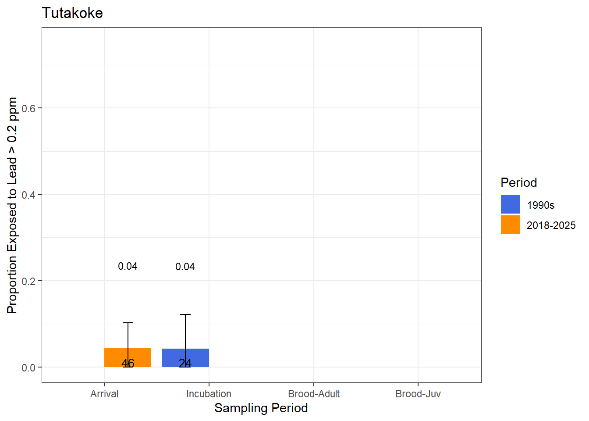

Spectacled Eiders are still being exposed to lead on the Yukon-Kuskokwim Delta, Alaska
Daniel Rizzolo, U.S. Fish and Wildlife Service, Northern Alaska Fish and Wildlife Field Office
2026-04-02
Last updated: 2026-04-02
Checks: 6 1
Knit directory: spei_lead/
This reproducible R Markdown analysis was created with workflowr (version 1.7.2). The Checks tab describes the reproducibility checks that were applied when the results were created. The Past versions tab lists the development history.
The R Markdown is untracked by Git. To know which version of the R
Markdown file created these results, you’ll want to first commit it to
the Git repo. If you’re still working on the analysis, you can ignore
this warning. When you’re finished, you can run
wflow_publish to commit the R Markdown file and build the
HTML.
Great job! The global environment was empty. Objects defined in the global environment can affect the analysis in your R Markdown file in unknown ways. For reproduciblity it’s best to always run the code in an empty environment.
The command set.seed(20230228) was run prior to running
the code in the R Markdown file. Setting a seed ensures that any results
that rely on randomness, e.g. subsampling or permutations, are
reproducible.
Great job! Recording the operating system, R version, and package versions is critical for reproducibility.
Nice! There were no cached chunks for this analysis, so you can be confident that you successfully produced the results during this run.
Great job! Using relative paths to the files within your workflowr project makes it easier to run your code on other machines.
Great! You are using Git for version control. Tracking code development and connecting the code version to the results is critical for reproducibility.
The results in this page were generated with repository version a41a727. See the Past versions tab to see a history of the changes made to the R Markdown and HTML files.
Note that you need to be careful to ensure that all relevant files for
the analysis have been committed to Git prior to generating the results
(you can use wflow_publish or
wflow_git_commit). workflowr only checks the R Markdown
file, but you know if there are other scripts or data files that it
depends on. Below is the status of the Git repository when the results
were generated:
Ignored files:
Ignored: .Rhistory
Ignored: .Rproj.user/
Ignored: admin/
Ignored: analysis/site_libs/
Ignored: documents/
Ignored: protocols/
Untracked files:
Untracked: -IFWL-JVVSD43.Rhistory
Untracked: analysis/map_eider_lead_fws_20251121.Rmd
Untracked: analysis/spei_pb_data_summary_20251202.Rmd
Untracked: analysis/spei_pb_data_summary_20251211.Rmd
Untracked: analysis/spei_pb_data_summary_202600330.Rmd
Untracked: analysis/spei_pb_data_summary_20260112-IFWL-JVVSD43.Rmd
Untracked: analysis/spei_pb_data_summary_20260112.Rmd
Untracked: code/est_exp_prob_create_plots_spei_lead_20231211.R
Untracked: code/est_exp_prob_create_plots_spei_lead_updated_20260113.R
Untracked: code/scrap_lead_summary.R
Untracked: data/7030169 data.csv
Untracked: data/README_spei_blood_lead_data.txt
Untracked: data/Rizzolo Lead VSEP22-045 E-report.xlsx
Untracked: data/eider_blood_samples_bands_utq_2022.csv
Untracked: data/eider_lead_fws.csv
Untracked: data/eider_lead_fws_2018-2022.csv
Untracked: data/eider_lead_fws_2018-2025.csv
Untracked: data/eider_lead_fws_2018-2025_20251203.csv
Untracked: data/eider_lead_fws_2023-2025_v2.csv
Untracked: data/eider_lead_fws_FOR_REP_SELECTION.csv
Untracked: data/leadcare2_validation/
Untracked: data/pb_blood_spei_fws_2018-2025.csv
Untracked: data/pb_blood_spei_fws_2018-2025_massSpec_voltam.csv
Untracked: data/pb_blood_spei_fws_validation_20260120.csv
Untracked: data/pb_lc_reps.csv
Untracked: data/pb_merged_all_msResults_lc2Results_20251124.csv
Untracked: data/pb_validation_voltam_mass_spec_20260120.csv
Untracked: data/qtbl_pb_2023-2025.xlsx
Untracked: data/sample_id_spei_blood_lead_2018.csv
Untracked: data/samples_analyzed_2018/
Untracked: data/samples_analyzed_2022/
Untracked: data/samples_analyzed_2025/
Untracked: data/samples_leadCare2_results/
Untracked: data/sourced/
Untracked: data/spei_pb_all_2018-2025.csv
Untracked: data/spei_pb_ms_lc_20251124
Untracked: data/spei_pb_ms_lc_20251124.csv
Untracked: data/temp_pb_all_wide.csv
Untracked: data/temp_wtf_pb_limits_ling.csv
Untracked: data/temp_wtf_pb_limits_wide_all.csv
Untracked: installed_packages.txt
Untracked: metadata/
Unstaged changes:
Modified: .gitignore
Modified: analysis/spei_pb_plot_validation_mass_spec_voltem.Rmd
Note that any generated files, e.g. HTML, png, CSS, etc., are not included in this status report because it is ok for generated content to have uncommitted changes.
There are no past versions. Publish this analysis with
wflow_publish() to start tracking its development.
Summary
Introduction
Exposure to lead through ingested spent lead shotgun pellets has been an a pernicious problem for waterfowl (Paine et al. 2019). In the 1990s, Spectacled Eiders on the Yukon-Kuskokwim Delta in Alaska were ingesting spent lead shotgun pellets (Franson et al. 1995, Flint et al. 1997, Franson et al. 1998), which was found to reduce their annual survival probability by 45% compared to individuals not exposed to lead (Grand et al. 1998, Flint et al 2016). Such population-level effects of ingested lead pellets on waterfowl (Bellrose 1959) motivated regulation of lead shotgun ammunition in the U.S. nationwide in 1991 (USFWS 1991, Byrne 2023). In Alaska, small caliber lead shotgun ammunition was banned for all use (i.e., waterfowl, upland game birds, and small game) in terrestrial habitats in the Yukon-Kuskokwim Region by the state in 2007 (State of Alaska 2007).
Despite regulation, lead exposure has remained problematic in some places due to lack of hunter compliance (Bechet et al. 2025) and persistence of historically deposited lead in the environment (Kenstrup et al. 2020, Nichols et al. 2021). On the Yukon-Kuskokwim Delta, experiments measuring the settlement rate of lead pellets in pond sediment estimated it would take 25 years for 100% of deposited lead pellets to settle deeper than 10 cm into the sediment and become unavailable to Spectacled Eiders (Flint and Schamber 2010). To prevent further deposition of lead pellets through hunter compliance with nontoxic shotgun ammunition regulations, state and federal agencies in Alaska have conducted sustained education and outreach efforts and lead-for-steel ammunition exchange programs across the state, including in the Yukon–Kuskokwim Delta region.
Since 2018, the U.S. Fish and Wildlife Service Endangered Species Recovery Program has collected blood samples from Spectacled Eiders in Alaska to estimate lead exposure rates 27-34 years after the use of lead shotgun ammunition was prohibited. Given that use of lead shotgun ammunition theoretically stopped by the mid-1990s, most previously deposited lead pellets in ponds in the Yukon-Kuskokwim Delta region should no longer be available to Spectacled Eiders and levels of lead in blood of breeding Spectacled Eiders should no longer exceed background concentrations.
Methods
Sample Collection
We collected blood samples opportunistically during projects that required capturing and handling Spectacled Eiders for other objectives. Those projects included satellite transmitter deployments and banding. Captures occurred during three periods of the breeding season: arrival to breeding areas before mean nest initiation, nest incubation, and brood-rearing. We captured adult males and females during arrival to the Yukon-Kuskokwim Delta (Kigigak Island in 2018, the Tutakoke River in 2018, 2022), and Arctic Coastal Plain (Utqiagvik and Teshekpuk Lake in 2022). We captured adult females during incubation (Kigigak Island in 2019, 2021-2025), and adults and ducklings during the brood rearing period (Kashunuk River in 2022 and Kigigak Island in 2022 and 2023).
We captured eiders during arrival to breeding areas using mist nets setup vertically in lakes surrounded by decoys (censu Dau 1976). During incubation, we captured females on nests using bow nets (Salyer 1962), and during brood rearing we captured ducklings and associated adult females by herding broods into mist nets setup vertically above and below the water surface in lakes (censu Dau 1976).
We collected blood samples from eiders using venipuncture of either the jugular or tibiotarsal veins. Jugular blood samples were 1-4 mL and collected using 21 gauge needles and 6 mL syringes; samples were transferred into 4 mL heparinized evacuated containers. Tibiotarsal blood samples were < 0.5 mL and collected by puncturing the vein with a 25 g needle and collecting blood in 1-3 capillary tubes which we transferred into a 1 mL heparinized vial.
Laboratory Analysis
All samples were stored frozen in the field and laboratory until analysis. Samples with volumes > 0.5 mL were analyzed using inductively coupled plasma-mass spectrometry (hereafter mass spectrometry). Samples with volumes < 0.5 mL were analyzed using anodic stripping voltammetry (hereafter voltammetry).
Samples collected in 2018, all > 0.5 mL, were analyzed at the Agrilife Research Veterinary Integrative Biosciences Laboratory of Texas A & M Univeristy (TAMU; n = 66). Samples were freeze-dried, homogenized, digested, and analyzed as dry samples. Results were converted to concentrations on the scale of wet mass using the mean moisture content for whole blood of (78.6%). Lead concentration was determined using mass spectrometry. Quality assurance-quality control (QAQC) procedures included procedural blanks (n = 4, mean blank equivalent concentration < 0.008 ppm), duplicate samples (n = 3, mean relative difference 3.46%, range 0.38% to 7.48%), and standard reference material percent spike recoveries (mean 103.99%, range 99.16% to 107.56%; TERL 2018). The lower detection limit for methodology used in 2018 was < 0.00369 ppm and there was no upper limit.
Blood samples > 0.5 mL collected 2021-2025 were analyzed in two batches (samples collected 2021-2022 analyzed in 2022, n = 138; samples collected 2023-2025 analyzed in 2025, n = 74) at the Washington Animal Disease Diagnostic Laboratory using mass spectrometry and nitric acid digestion. QAQC procedures included procedural blanks (n = 19, mean blank equivalent concentration 0.015 ppm, range: 0.0 to 0.17 ppm), duplicate samples (n = 10, mean relative difference 5.12%, range: 1.01% to 10.30%), standard reference material percent spike recoveries (mean 98%, range 84% to 109%), and control reference samples (mean percent difference = 12%, range 0.0% to 30.4%, n = 41; WADDL 2022). The lower detection limit for methodology used in 2022 and 2025 was < 0.02 ppm and there was no upper limit.
Blood samples < 0.5 mL collected 2023-2025 (n = 23) were analyzed using a LeadCare II blood point-of-care blood lead testing system (Magellan Diagnostics, Billerica, MA), which uses voltammetry to quantify lead concentration in whole blood. The LeadCare II analyzer was designed to test freshly collected human blood, but has been used to test previously frozen avian blood (Brown et al. 2006, Herring et al. 2018). Detection limits for LeadCare II are > 0.033 ppm and < 0.65 ppm. Samples outside of this range are reported by the instrument as either high (> 0.65 ppm) or low (< 0.033). LeadCare II testing was done at the USFWS Northern Alaska Fish and Wildlife Field Office Laboratory following the protocol described in the LeadCare II User’s Guide (Magellan Diagnostics 2022). QAQC duplicate samples were consistent when above the detection limit (i.e., all registered as high; n = 4 paired samples). For paired samples with at least 1 sample below the detection limit (n = 23 paired samples), 87% of sample pairs were also under the lower detection limit. Of the three paired samples with one sample below the detection limit and the other above that limit, the mean lead concentration of the sample above the limit was 0.045 ppm (range: 0.035 to 0.062 ppm), with a mean percent absolute difference of 21%. Further paired sample analysis is required within the detection limits of LeadCare II.
Voltammetry Validation
We used the LeadCare II system to test a subset of samples (n = 93) that were analyzed using mass spectrometry to assess the agreement of results from the two methods using mass spectrometry results as the standard for comparison. The LeadCare II blood analyzer has a narrower range of detection than mass spectrometry. We first compared results from LeadCare II that were below (< 0.033 ppm) or above (> 0.65 ppm) the instrument’s detection limits to their corresponding mass spectrometry values to confirm that LeadCare II lower detection limit samples were all < 0.033 ppm and all upper detection limit values values were > 0.65 ppm, according to mass spectrometry results.
We used results from samples analyzed by both methods with values within the detection limits of LeadCare II to examine the correlation between LeadCare II results and mass spectrometry results. We fit a linear model using log-transformed mass spectrometry values as the response variable and log-transformed LeadCare II values as the explanatory variable. We used model parameter estimates to assess the association between mass specrometry values and LeadCare II values through the estimated slope value, with a slope = 1.0 indicating perfect correspondence between methods. Further, if results indicated bias in LeadCare II results, we used parameter estimates from the model to correct for the bias in LeadCare II values prior to estimating lead exposure rates.
Lead Exposure Estimates
Elevated blood lead concentrations indicate recent, point-source exposure to lead in the environment (Franson and Pain 2011). We categorized lead exposure, from mass spectrometry and adjusted voltammetry results, based on accepted thresholds: blood lead values \(\ge\) 0.20 ppm indicate exposure above background levels with subclinical effects; values \(\ge\) 0.50 ppm indicate potential lead toxicosis; values > 1.0 ppm indicate potentially severe lead toxicosis (Franson and Pain 2011, Table 16.1). We used logistic regression models (i.e., models that assume a binomial distribution and use a logit link to the data) fit in Program R (R Core Team 2025) to estimate the probability of lead exposure (i.e., blood lead concentrations \(\ge\) 0.20 ppm) and associated 95% confidence intervals for each study site (Kashunuk River, Kigigak Island, Tutakoke River on the Yukok-Kuskokwim Delta and Utqiagvik and Teshekpuk Lake on the Arctic Coastal Plain) and during each capture period (arrival, incubation, brood rearing).
Historical Comparison
In the 1990s, the probability of exposure to lead for Spectacled Eiders, based on blood lead concentrations, was estimated for sites throughout the Yukon-Kuskokwim Delta (Flint et al. 1997, Franson et al. 1998, Flint et al. 2016). We compared exposure rates between samples collected in the 1990s from the Kashunuk River (1993-1999), Kigigak Island (1994-1999), and the Tutakoke River (1997-1998; Flint and Petersen 2023) and samples from the 2018-2025 period at those sites. We also included samples collected during incubation from Spectacled Eiders at the Kashunuk River in 2022 (Flint et al. 2023, Flint and Petersen 2023) as an additional measure of recent exposure. We compare exposure between the 1990s and the 2018-2025 period by site and sampling period based on 95% confidence interval coverage relative to point estimates (Cumming et al. 2007).
# load and wrangle blood lead concentration data 2018-2025 from mass spec analysis and voltammetry (LeadCare II) analysis
# These data frames are created in this code junk:
# -pb_ms: blood lead concentration data from mass spectrometry 2018-2025 loaded from file eider_lead_fws_2018-2025_20251203.csv
# -pb_lc: blood lead concentration data from voltammetry as output from the LeadCare II analyzer loaded file from data_leadCare2_results_20251203.csv
# -pb_lc_unique: subset of pb_lc that excludes internal replicates (same sample analyzed twice with LC2 for QAQC)
# -pb_all: merged pb_ms and pb_lc_unique, subsequently subset to just samples from SPEI
# -pb_unique: blood lead concentration from both mass spec and voltammetery that includes only unique samples (no internal or cross-method replicates)
# load mass spec lead data (from Texas A&M Univ, and Washington State): includes COEI, KIEI, SPEI - most are SPEI (all but 3 samples)
# NB samples are uniquely identified by combination of id_metalBand AND dt_sampled (id_metalBand have been sampled on >1 dt_sampled); no internal replicates included
pb_ms <- read.csv("data/eider_lead_fws_2018-2025_20251203.csv") # NB [pb] in units of ppm
# format date
pb_ms$dt_sampled <- as.Date(pb_ms$dt_sampled, format = "%Y-%m-%d")
# create year variable
pb_ms$year <- format(pb_ms$dt_sampled, "%Y")
#table(pb_ms$year, pb_ms$id_species)
# check data
#sum_ms <- summary(pb_ms)
#sum_ms
# load Lead Care II (by voltammetry) results (NB includes both internal replicates (same sample analyzed twice in LC2) and cross method replicates (same sample analyzed by both LC2 and mass spec))
pb_lc <- read.csv("data/samples_leadCare2_results/data_leadCare2_results_20251203.csv") # 20251203 version includes x-vars
pb_lc$pb_blood_ppm <- pb_lc$val_blood_lead_ug.dL*0.01 # convert lead from units of ug/dL to ppm to match units of mass spec data
# format date
pb_lc$dt_sampled <- as.Date(pb_lc$dt_sampled, format = "%Y-%m-%d")
# create year variable
pb_lc$year <- format(pb_lc$dt_sampled, "%Y")
#table(pb_lc$year)
# REMOVE INTERNAL REPLICATES - samples measured more than once in the LeadCare II instrument, here is_replicate = 1 for the second sample result for a given sample. Replicates across methods (LC2 and mass spec) remain in pb_lc_unique
pb_lc_unique <- subset(pb_lc, is_replicate != 1)
#table(pb_lc_unique$year)
# specify relevant columns
keep <- c("id_metalBand", "pb_blood_ppm", "cat_analysis", "cat_detectLimit", "id_species", "dt_sampled", "cat_periodCapt", "id_studySite", "val_lat", "val_lon", "is_recap", "cat_sex", "cat_age", "val_bodyMass_g", "year")
# subset to relevant columns to match ms data frame
pb_lc_unique <- pb_lc_unique[ , keep]
# check data
#sum_lc <-summary(pb_lc_unique)
#sum_lc
# merge ms into lc data into one dataframe, keep only SPEI data; NB includes samples analyzed by both mass spec and LC2
pb_all <- rbind.data.frame(pb_ms, pb_lc_unique)
# check data
sum_pb <- summary(pb_all)
#table(pb_all$id_species) # all spei except 1 COEI and 2 KIEI; reduce to only SPEI
pb_all <- subset(pb_all, id_species == "SPEI")
# sort
pb_all <- pb_all[order(pb_all$id_metalBand, pb_all$dt_sampled), ]
# total number of blood samples from mass spec and voltammetry, including samples analyzed by both mass spec and voltammetery to calibrate LC2
n_samples_all <- nrow(pb_all)
# total number of UNIQUE blood samples given band ID and date sampled (excludes replicate results from samples analyzed by both LC2 and mass spec)
n_samples_uniq <- nrow(unique(pb_all[c("id_metalBand", "dt_sampled")])) # samples unique IDs are the metalBand AND sample date combined; some individs sampled over multiple years (treated as independent samples)
# which samples have replicate results (same sample analyzed by LC2 and mass spec)
dup_ids <- duplicated(pb_all[, c("id_metalBand", "dt_sampled")])
# number of samples (unique by band and date) analyzed > 1 time
pb_lc_reps <- pb_all[dup_ids, ] # pb_lc_reps data frame is subset of full pb data. It includes only LC2 results from samples that were also run in mass spec
n_samples_reps <- nrow(pb_lc_reps) # how many duplicate samples
#table(pb_lc_reps$year) # samples run in LC as duplicated by year, NB some of these samples were originally analyzed by mass spec
# for QAQC results, save pb_lc_reps
#write.csv(pb_lc_reps, "data/pb_lc_reps.csv")
# create data frame of LeadCare II internal reps, i.e., samples analyzed in LC2 with the same combo metal band - sample date
pb_lc_int_dups <- pb_lc[duplicated(paste(pb_lc$id_metalBand, pb_lc$dt_sampled, sep = "_")) | duplicated(paste(pb_lc$id_metalBand, pb_lc$dt_sampled, sep = "_"), fromLast = TRUE), ]
# replicated samples within LC detection limits (these are available to use to calibrate LC2 results against mass spec results)
lc_rep_detected <- subset(pb_lc_reps, cat_detectLimit == "detected")
n_lc_rep_detected <- nrow(lc_rep_detected)
# other sample size counts
n_mass_spec <- nrow(subset(pb_all, cat_analysis == "mass_spec")) # number of samples analyzed by mass spec
n_volt <- nrow(subset(pb_all, cat_analysis == "voltammetry")) # number of samples analyzed by voltammetry, including internal and cross-method replicates
n_volt_unique <- n_samples_uniq - n_mass_spec
# change all ASY (males only) to AHY to simplify age categories to AHY and Local
pb_all$cat_age[pb_all$cat_age == "ASY"] <- "AHY"
# sample sizesby year and analysis type
#table(pb$year, pb$cat_analysis)
# pb remove results from LC2 for samples with replicate results from mass spec
# create colum "is_replicate_all" in indicate samples analyzed by both mass spec and LC2 with = TRUE for both samples in the pair of duplicates and FALE otherwise
pb_all$is_replicate_all <- duplicated(pb_all[c("id_metalBand", "dt_sampled")]) | duplicated(pb_all[c("id_metalBand", "dt_sampled")], fromLast = TRUE)
# remove duplicate records (i.e., is_replicate_all = TRUE) with cat_method = voltammetry; i.e., the voltammetry sample of duplicate pairs, keep mass spec sample
pb_all$rep_remove <- pb_all$is_replicate_all == TRUE & pb_all$cat_analysis != "mass_spec" # set to 1 for records that are replicates and analyzed by LC
pb_unique <- subset(pb_all, rep_remove == FALSE)
#pb_no_dps <- subset(pb_all, is_replicate_all != TRUE & cat_analysis == "mass_spec"
# create data frame of voltam samples that were also analyzed by mass spec
pb_lc_mass_spec_reps <- subset(pb_all, rep_remove == TRUE)
# format table of blood lead concentrations sample sizes by lab type (not currently presented in report, but it's here)
tbl_pb_sample_n_method_year <- as.data.frame(table(pb_unique$year, pb_unique$cat_analysis))
tbl_names <- c("Year", "Analysis Type", "n")
colnames(tbl_pb_sample_n_method_year) <- tbl_names
#tbl_pb_sample_n_method_year
tbl_n_by_analysis <- kable(tbl_pb_sample_n_method_year,
caption = "Table X. Blood lead concentration sizes by laboratory analysis type.",
align = c("l", "l", "l"),
digits = 0,
row.names = FALSE)
#write.csv(pb, "data/spei_pb_all_2018-2025.csv")
# sample sizes
# Years-sampled n tot n SPEI
# 2018 64 63 # NB, one COEI blood sample and 1 kidney and 1 liver sample, each, all filtered from the data set for this analysis
# 2019-2022 140 138 # this n is matches pb
# 2023-2025 74 74 # I get n = 97 for this period in pb, why the difference?
# Total 281 278Results
We analyzed 298 whole blood samples for lead concentration (Table 1). We obtained results using mass spectrometry from 275 samples, and using voltammetry from 23 samples. Additionally, 94 samples were analyzed using both methods. Most (95%) of samples were from sites on the Yukon-Kuskokwim Delta.
Samples collected during the arrival period were from males and females. All incubation samples were from females and samples from the brood rearing period were female adults and both male and female ducklings. Sample sizes by study site, sampling period, and age class ranged from two samples collected from after hatch year females at Teshekpuk Lake to 118 samples from incubating females at Kigigak Island (Table 1).
# create table showing sample sizes by site, capture period, and age (unique samples by ID and year)
tbl_pb <- as.data.frame(table(pb_unique$id_studySite, pb_unique$cat_periodCapt, pb_unique$cat_age))
# table friendly column names
colnames(tbl_pb) <- c("Site", "Period", "Age", "n") # rename columns
# sort
order_period <- c("arrival", "incubation", "brood")
tbl_pb$Period <- factor(tbl_pb$Period, levels = order_period)
tbl_pb <- tbl_pb[order(tbl_pb$Site, tbl_pb$Period, tbl_pb$Age), ]
# remove rows with zeros (where each row is a unique site-period-age combination)
tbl_pb <- as.data.frame(tbl_pb[tbl_pb$n != 0, ])
# format some category names for the table
# change some category names
levels(tbl_pb$Age)[levels(tbl_pb$Age) == "local"] <- "Duckling"
levels(tbl_pb$Age)[levels(tbl_pb$Age) == "AHY"] <- "Adult"
levels(tbl_pb$Period)[levels(tbl_pb$Period) == "incubation"] <- "Incubation"
levels(tbl_pb$Period)[levels(tbl_pb$Period) == "arrival"] <- "Arrival"
levels(tbl_pb$Period)[levels(tbl_pb$Period) == "brood"] <- "Brood"
# format table with kable function of package knitr
kable(tbl_pb,
caption = "Table 1. Sample sizes for whole blood samples collected from Spectacled Eiders 2018-2025 by capture site, sampling period, and age class.",
align = c("l", "l", "l"),
digits = 0,
row.names = FALSE)| Site | Period | Age | n |
|---|---|---|---|
| Kashunuk | Brood | Adult | 10 |
| Kashunuk | Brood | Duckling | 13 |
| Kigigak | Arrival | Adult | 41 |
| Kigigak | Incubation | Adult | 118 |
| Kigigak | Brood | Adult | 23 |
| Kigigak | Brood | Duckling | 33 |
| Teshekpuk | Arrival | Adult | 2 |
| Tutakoke | Arrival | Adult | 46 |
| Utqiagvik | Arrival | Adult | 9 |
| Utqiagvik | Incubation | Adult | 3 |
# Validate LeadCare II (voltammetry) results to mass spectrometry (the standard for the comparison) results
# including fitting a linear model to get parameter estimates to adjust LeadCare II results to bias relative to mass spec results
# Create some data frames:
# pb_all_long: all lead results from both methods in one column with method used to get the results (mass spec, voltammetery) in another column
# pb_all_wide: all lead results from both methods with results from different methods in different columns
# pb_limits_long: only results from samples analyzed by both methods and within LeadCare II detection limits (0.033, 0.65) with all results in one column
# pb_limits_wide: only results from samples analyzed by both methods and within LeadCare II detection limits (0.033, 0.65) with all results in two columns
# pb_limits_both_wide
# ldl: samples analyzed by both methods with voltammetry values = 0.033 (indicates below lower limit for LeadCare II) in wide format
# udl: samples analyzed by both methods with voltammetry values = 0.65 (indicated above the upper limit for LeadCare II) in wide format
# Create pb_all_long ####
# all results in long format (same as data frame pb)
pb_all_long <- pb_all
# covert to wide format with separate columns for mass spec and voltammetry results, NAs for samples analyzed by only one method
pb_all_wide <- reshape(pb_all_long,
direction = "wide",
idvar = c("id_metalBand", "dt_sampled"),
timevar = "cat_analysis",
v.names = "pb_blood_ppm"
)
# Create pb_limits_long ####
# results within LeadCare II limits in long format
pb_limits_long <- subset(pb_all_long, pb_blood_ppm < 0.65 & pb_blood_ppm > 0.033) # remove records from both analysis methods based on LeadCare II limits
# Create pb_limits_wide ####
# results within LeadCare II limits for only samples analyzed by BOTH methods
pb_limits_wide <- reshape(pb_limits_long,
direction = "wide",
idvar = c("id_metalBand", "dt_sampled"),
timevar = "cat_analysis",
v.names = "pb_blood_ppm"
)
# finalize pb_limits_wide by removing records with NAs in either analysis result column
pb_limits_wide <- pb_limits_wide[complete.cases(pb_limits_wide[, c("pb_blood_ppm.mass_spec", "pb_blood_ppm.voltammetry")]), ]
# temp: is the above working like it is supposed to be?
# create pb_limits_both_wide ####
# all data but only for samples analyzed by both methods, in wide format
pb_both_wide <- pb_all_wide[complete.cases(pb_all_wide[, c("pb_blood_ppm.mass_spec", "pb_blood_ppm.voltammetry")]), ]
# when data set pivoted, cat_detectLimit changed due to replicate sample IDs, redefine levels here
pb_both_wide$cat_detectLimit[pb_both_wide$pb_blood_ppm.voltammetry <= 0.033] <- 'below_limit'
pb_both_wide$cat_detectLimit[pb_both_wide$pb_blood_ppm.voltammetry >= 0.065] <- 'above_limit'
pb_both_wide$cat_detectLimit[pb_both_wide$pb_blood_ppm.voltammetry > 0.033 & pb_both_wide$pb_blood_ppm.voltammetry < 0.65] <- 'detected'
# Create ldl ####
# ldl: records with voltammetry results returned as below detection limit, entered as 0.033 ppm
ldl <- subset(pb_both_wide, pb_blood_ppm.voltammetry == 0.033)
# Create udl ####
# udl: records with voltammetry results returned as above detection limit, entered as 0.65 ppm
udl <- subset(pb_both_wide, pb_blood_ppm.voltammetry == 0.65)
# Compare results between methods at LeadCare II detection limits (0.033, 0.65 ppm) ####
# do all results from voltammetry that were tested as below lower detection limit have values from mass spec < 0.033? ####
n_volt_ldl <- nrow(ldl)
n_ms_match_volt_ldl <- nrow(subset(ldl, pb_blood_ppm.mass_spec < 0.034))
pct_match_ldl <- (n_ms_match_volt_ldl/n_volt_ldl)*100
pct_match_ldl <- sprintf("%.1f", pct_match_ldl)
# do all results from voltammetry that were tested as above the upper detection limit have values from mass spec < 0.65? ####
n_volt_udl <- nrow(udl)
n_ms_match_volt_udl <- nrow(subset(udl, pb_blood_ppm.mass_spec > 0.65))
pct_match_udl <- (n_ms_match_volt_udl/n_volt_udl)*100
pct_match_udl <- sprintf("%.1f", pct_match_udl)
# Data within the LeadCare II detection limits
# Two approaches here:
# 1. linear model (m0) with lead results within LeadCare II detection limits as response and method type (mass spec, voltammetry) as the explanatory variable to test the hypothesis that methods differ based on parameter estimate for the method not used as the reference level
# Approach 1 (m0) is commented out because I don't use the results
# 2. linear model (m67) with only results from samples analyzed by both methods in wide format and with values within LeadCare II detection limits. This model treats mass spec results as the response variable and voltammetry results as the explanatory variable and tests the hypothesis that the methods agree with intercept = 0 and slope = 1. (approach in Herring et al. 2018)
# Linear model m1 ####
# fit model m0 with log-transformed ppm to better approximate normal residuals and analysis type (mass spec or voltammetry) as x-var
# use only data within detection limits of LeadCare II that were analyzed by both methods
#m0 <- lm(log(pb_blood_ppm) ~ cat_analysis, data = pb_limits_wide)
#summary(m0)
#confint(m0) # no diff between methods, but most of the 95% CI around the voltammetry parameter lies below zero
#plot(m0) # data meets model assumptions
#backtrasform from log scale to median (not mean) ppm scale
#m0_massSpec_median <- exp(coef(m0)[1]) # backtransformed intercept = mass spec median value in ppm
#m0_voltam_median <- exp(coef(m0)[1]+coef(m0)[2]) # backtransformed int + voltamm coeff = voltammetry median in ppm
#m0_diff_in_medians <- exp(coef(m0)[2]) # difference between mass spec and voltamm medians in ppm
#m0_log_fitted_medians <-emmeans(m0, "cat_analysis") # get mean by method on log scale with emmeans package
#m0_log_fitted_medians
# backtransform fitted medians on ppm scale
#m0_ppm_grid <- ref_grid(m0) # set reference grid (https://cran.r-project.org/web/packages/emmeans/vignettes/transformations.html)
#m0_ppm_fitted_medians <- emmeans(regrid(m0_ppm_grid), "cat_analysis") # get medians on ppm scale
#summary(m0_ppm_fitted_medians)
#plot(m0_ppm_fitted_medians)
# summary: using all validation data, median values from LeadCare II and mass spec are not convincingly different
# medians differed by 0.02 ppm with LC2 values < mass spec, but broadly overlapping 95% CI (that include each other's median point estimates)
# Linear model m67 ####
# treat mass spec results as the response and voltammery results as x-var, both log transformed and using data within the LC2 detection limits
m67 <- lm(log(pb_blood_ppm.mass_spec) ~ log(pb_blood_ppm.voltammetry) , data = pb_limits_wide)
#summary(m67)
#confint(m67)
#plot(m67)
# save data set used in the analysis for meta data and archive
#write.csv(pb_limits_wide, "data/pb_blood_spei_fws_validation_20260120.csv")Voltammetry Validation
Of the voltammetry results that were below the lower detection limit of the method (0.033 ppm), 83.6 % (46 of 55 samples) had mass spectrometry results that were < 0.033 ppm. The mass spectrometry results > 0.033 ppm that when analyzed by LeadCare II were below the instrument’s 0.033 ppm detection limit ranged from 0.034 to 0.064 ppm (mean 0.045 ppm, 0.012 ppm mean deviation from the voltammetry lower detection limit).
Of the voltammetry results greater than the upper detection limit of the method (0.65 ppm), 100.0 % (5 of 5 samples) had mass spectrometry results > 0.65 ppm.
The linear association between 23 paired samples analyzed by both mass spectrometry and voltemmetry on the log-log scale had a y-intercept of X (95% CI) and slope of 1.046 (95% CI; Fig. 1). The slope estimate suggests a possible negative bias with voltammetry values tending to be lower than mass spectrometry values. Given a 10% increase in lead concentration determined by voltammetry, lead concentration assessed by mass spectrometry increased by 10.5%. The slope estimate was not convincingly different from 1.0 based on confidence interval coverage; however, given the small sample size and results from previous studies that have consistently shown a negative bias in LeadCare II results from previously frozen avian blood (Herring et al. 2018), we adjusted LeadCare II results prior to lead exposure classification. We used the linear model parameters and LeadCare II results to calculate model fitted values corrected for the negative bias in LeadCare II results and back transformed those values from the log scale to parts per million (ppm).
# plot mass spec vs. voltammetery values with hypothesized slope = 1 line and actual slope of the association from the m67 linear model
p.m67 <- ggplot(data = pb_limits_wide, aes(y = log(pb_blood_ppm.mass_spec), x = log(pb_blood_ppm.voltammetry)))+
geom_point()+
#geom_abline(slope = 1, intercept = 0, linetype = "dashed")+
geom_abline(intercept = coef(m67)[1], slope = coef(m67)[2], color = "red")+
#geom_abline(intercept = 0, slope = coef(m67)[2], color = "red")+ # set intercept to 0 to compare only slopes
theme_bw()
p.m67
# covert voltam values to mass spec values given linear model parameter estimates, NB calculation happens on the log scale
# save linear model parameter estimates as objects
int_m67 <- coef(m67)[1]
slope_m67 <- coef(m67)[2]
pb_limits_wide$ln_fitted <- int_m67 + slope_m67 * log(pb_limits_wide$pb_blood_ppm.voltammetry)
# plot model-adjusted LeadCare II values
p.m67_fit <- ggplot(data = pb_limits_wide, aes(y = log(pb_blood_ppm.mass_spec), x = ln_fitted))+
geom_abline(intercept = coef(m67)[1], slope = coef(m67)[2], color = "red")+
geom_point()+
geom_abline(slope = 1, intercept = 0, linetype = "dashed")+
theme_bw()
#p.m67_fit # don't really need to include this plot
# NB the data points shift when adjusted using the linear model parameters, not the plotted lines.
diff_ms_volt <- round(mean(pb_limits_wide$pb_blood_ppm.mass_spec-pb_limits_wide$pb_blood_ppm.voltammetry), 3) # difference b/t mass spec and unadjusted LC2 values
diff_ms_fit <- round(mean(pb_limits_wide$pb_blood_ppm.mass_spec- exp(pb_limits_wide$ln_fitted)), 3) # difference b/t mass spec and adjusted LC2 values
# backtransform from log-scale to ppm
pb_limits_wide$fitted_ppm <- exp(pb_limits_wide$ln_fitted)
# difference between original LC2 results and adjusted LC2 results in this subset of the data used to estimate the linear model
diff_lcOrig_lcFit <- round(mean(pb_limits_wide$pb_blood_ppm.voltammetry - pb_limits_wide$fitted_ppm), 3)
# in data frame pb_unique(one result for each sample, no replicates within or between methods; where reps exist, mass spec included over LC2), adjust LC2 results based on linear model parameters from the matched-results linear model (m67) to account for LC2 negative bias
# first save all original values as "pb_blood_ppm_original"
pb_unique$pb_blood_ppm_original <- pb_unique$pb_blood_ppm
# apply intercept and slope estimates from m67 to adjust lead values from LC2 ####
# if a lead value is from LC2-voltammetry and within LC2 detection limits, then adjust it, otherwise (mass spec values), keep the lead value
#pb_unique$pb_blood_ppm_adjusted <- ifelse(pb_unique$cat_analysis == "voltammetry" & pb_unique$cat_detectLimit == "detected",
# exp(int_m67 + (slope_m67*log(pb_unique$pb_blood_ppm))), # adjustment on log scale and back transformed to ppm
# pb_unique$pb_blood_ppm)
pb_unique$pb_blood_ppm_adjusted <- ifelse(pb_unique$cat_analysis == "voltammetry" & pb_unique$cat_detectLimit == "detected",
exp(int_m67 + (slope_m67*log(pb_unique$pb_blood_ppm))), # adjustment on log scale and back transformed to ppm
pb_unique$pb_blood_ppm)
# replace the original lead ppm values with the adjusted values
pb_unique$pb_blood_ppm <- pb_unique$pb_blood_ppm_adjusted
# save this data set because this will be used to estimate percent exposed by site and capture period
# first remove unneeded columns
temp_pb_unique <- subset(pb_unique, select = -c(is_replicate_all, rep_remove, pb_blood_ppm_adjusted))
pb_unique <- temp_pb_unique
#write.csv(pb_unique, "data/pb_blood_spei_fws_2018-2025.csv", row.names = FALSE)
# Note: only 7 samples were analyzed only by LC2 voltammetry. Of those 7, only 1 was just below the 0.2 ppm exposure threshold and was adjusted to above that threshold (metal band 200741887 2023-06-26: original LC value 0.178 ppm, adjusted LC value = 0.216); all other 6 samples remained below the 0.2 ppm exposure threshold (mean of original LC values was 0.048 ppm, mean of adjusted values was 0.055 ppm).The mean difference between mass spectrometry results and voltammetry results was 0.033 ppm. After voltammetry results were adjusted for their likely negative bias relative to mass spectrometery results, the mean difference between methods was 0.006 ppm.
Model parameters were used to adjust voltammetry values within the LeadCare II detection limits in the full data set. That data set included 7 samples (of 27 samples) that were analyzed using only LeadCare II that were within the detection limits of the instrument. Of those 7 samples, only one had a blood lead value below the 0.20 ppm exposure threshold value (metal band 200741887 sampled 2023-06-26, blood lead = 0.178 ppm) that was above the threshold after it was model-adjusted (model adjusted value = 0.216 ppm). The remaining 6 values were well below the exposure threshold (mean of original values 0.048 ppm, mean after model adjustment 0.055 ppm). Of the remaining 20 samples, 3 were above the LeadCare II upper detection limit and 17 were below the instrument’s lower detection limit.
# Estimate prop exposed by capture period ####
# Create lead exposure indicator variables and use exposure indicator variable to estimate prop exposed with a logistic regression
# Done by subsetting df_recent and fitting models to period-specific data sets
# output: data frame "est_pb_exp_fws_recent" that has prop exp estimates and 95% CIs by site and capture period
# cbind relevant columns into data frame to use for site-period estimates
df_recent <- cbind.data.frame(
pb_unique$id_metalBand,
pb_unique$id_species,
pb_unique$dt_sampled,
pb_unique$id_studySite,
pb_unique$cat_periodCapt,
pb_unique$cat_age,
pb_unique$cat_sex,
pb_unique$pb_blood_ppm)
# rename columns
colnames(df_recent) <- c("band_metal", "species", "date_capture", "site", "period", "age", "sex", "pb")
# set lead exposure threshold ####
# create Pb exposure column with 2.0 ppm threshold; using >= to as per spei lit before Flint et al 2016: Franson et al. 1998; Grand et al. 1998)
df_recent$exposed <- ifelse(df_recent$pb >= 0.20,1,0)
# create Pb clinical toxicity column with 1.0 threshold
df_recent$clinical <- ifelse(df_recent$pb >= 0.50,1,0)
# create Pb severe column with >= 1.00 threshold
df_recent$severe <- ifelse(df_recent$pb >= 1.0,1,0)
# fit logistic regression models to estimate proportion of exposed samples with 95% CIs ####
# I fit models by period (arrival, incubation, brood rearing [adult and juvenile]) to get results by site (and age for brood rearing samples)
# 1. Adults at arrival ####
# subset data for just arrival
df_rcnt_arrv <- subset(df_recent, period == "arrival")
# fit log reg model
glm_rcnt_arrv_exp <- glm(formula = exposed ~ site , family = binomial(link = "logit"), data = df_rcnt_arrv) #
#summary(glm_rcnt_arrv_exp)
# get sample sizes
n_recent_arrv_exp <- aggregate(df_rcnt_arrv$exposed ~ df_rcnt_arrv$site, FUN = length)
#n_recent_arrv_exp
# get marginal means with emmeans package
means_rcnt_arrv_exp <- emmeans(glm_rcnt_arrv_exp, ~ site, trans = "response")
sum_means_rcnt_arrv_exp <- as.data.frame(summary(means_rcnt_arrv_exp))
# add info to table of estimates
sum_means_rcnt_arrv_exp$data <- "FWS"
sum_means_rcnt_arrv_exp$study_period <- "2018-2025"
sum_means_rcnt_arrv_exp$capt_period <- "Arrival"
sum_means_rcnt_arrv_exp$sex <- "F,M"
sum_means_rcnt_arrv_exp$age <- "Adult"
sum_means_rcnt_arrv_exp$type_exposure <- "\u2265 0.20 pmm"
sum_means_rcnt_arrv_exp$n <- n_recent_arrv_exp[ ,2]
# 2. adults at incubation ####
df_rcnt_inc <- subset(df_recent, period == "incubation")
# fit model
glm_rcnt_incub_exp <- glm(formula = exposed ~ site , family = binomial(link = "logit"), data = df_rcnt_inc)
#summary(glm_rcnt_incub_exp)
# get sample sizes
n_recent_inc_exp <- aggregate(df_rcnt_inc$exposed ~ df_rcnt_inc$site, FUN = length)
#n_recent_inc_exp
# get marginal means
means_rcnt_inc_exp <- emmeans(glm_rcnt_incub_exp, ~ site, trans = "response")
sum_means_rcnt_inc_exp <- summary(means_rcnt_inc_exp)
# add info to table of estimates
sum_means_rcnt_inc_exp$data <- "FWS"
sum_means_rcnt_inc_exp$study_period <- "2018-2025"
sum_means_rcnt_inc_exp$capt_period <- "Incubation"
sum_means_rcnt_inc_exp$sex <- "F"
sum_means_rcnt_inc_exp$age <- "Adult"
sum_means_rcnt_inc_exp$type_exposure <- "\u2265 0.20 pmm"
sum_means_rcnt_inc_exp$n <- n_recent_inc_exp[ ,2]
# 3. adults at brood rearing ####
df_rcnt_brood_ad <- subset(df_recent, period == "brood" & age != "local")
# fit model
glm_rcnt_brood_ad_exp <- glm(formula = exposed ~ site , family = binomial(link = "logit"), data = df_rcnt_brood_ad)
#summary(glm_rcnt_brood_ad_exp)
# get sample sizes
n_recent_brood_ad_exp <- aggregate(df_rcnt_brood_ad$exposed ~ df_rcnt_brood_ad$site, FUN = length)
#n_recent_brood_ad_exp
# get marginal means
means_rcnt_brood_ad_exp <- emmeans(glm_rcnt_brood_ad_exp, ~ site, trans = "response")
sum_means_rcnt_brood_ad_exp <- summary(means_rcnt_brood_ad_exp)
# add info to table of estimates
sum_means_rcnt_brood_ad_exp$data <- "FWS"
sum_means_rcnt_brood_ad_exp$study_period <- "2018-2025"
sum_means_rcnt_brood_ad_exp$capt_period <- "Brood-Adult"
sum_means_rcnt_brood_ad_exp$sex <- "F"
sum_means_rcnt_brood_ad_exp$age <- "Adult"
sum_means_rcnt_brood_ad_exp$type_exposure <- "\u2265 0.20 pmm"
sum_means_rcnt_brood_ad_exp$n <- n_recent_brood_ad_exp[ ,2]
# 4. ducklings at brood rearing ####
df_rcnt_brood_loc <- subset(df_recent, period == "brood" & age == "local")
# fit model
glm_rcnt_brood_loc_exp <- glm(formula = exposed ~ site , family = binomial(link = "logit"), data = df_rcnt_brood_loc)
#summary(glm_rcnt_brood_loc_exp)
# get sample sizes
n_recent_brood_loc_exp <- aggregate(df_rcnt_brood_loc$exposed ~ df_rcnt_brood_loc$site, FUN = length)
#n_recent_brood_loc_exp
# get marginal means
means_rcnt_brood_loc_exp <- emmeans(glm_rcnt_brood_loc_exp, ~ site, trans = "response")
sum_means_rcnt_brood_loc_exp <- summary(means_rcnt_brood_loc_exp)
# add info to table of estimates
sum_means_rcnt_brood_loc_exp$data <- "FWS"
sum_means_rcnt_brood_loc_exp$study_period <- "2018-2025"
sum_means_rcnt_brood_loc_exp$capt_period <- "Brood-Juv"
sum_means_rcnt_brood_loc_exp$sex <- "F,M"
sum_means_rcnt_brood_loc_exp$age <- "Duckling"
sum_means_rcnt_brood_loc_exp$type_exposure <- "\u2265 0.20 pmm"
sum_means_rcnt_brood_loc_exp$n <- n_recent_brood_loc_exp[ ,2]
# rowbind tables to compile all results
est_pb_exp_fws_recent <- rbind(
sum_means_rcnt_arrv_exp,
sum_means_rcnt_inc_exp,
sum_means_rcnt_brood_ad_exp,
sum_means_rcnt_brood_loc_exp
)
# format table
est_pb_exp_fws_recent$prob <- round(est_pb_exp_fws_recent$prob, 3)
est_pb_exp_fws_recent$asymp.LCL <- round(est_pb_exp_fws_recent$asymp.LCL, 3)
est_pb_exp_fws_recent$asymp.UCL <- round(est_pb_exp_fws_recent$asymp.UCL, 3)
# constrain confidence limits to between 0 and 1
est_pb_exp_fws_recent$asymp.LCL <- ifelse(est_pb_exp_fws_recent$asymp.LCL < 0, 0, est_pb_exp_fws_recent$asymp.LCL )
est_pb_exp_fws_recent$asymp.UCL <- ifelse(est_pb_exp_fws_recent$asymp.UCL > 1.00, 100, est_pb_exp_fws_recent$asymp.UCL )
# remove unnecessary columns
est_pb_exp_fws_recent <- subset(est_pb_exp_fws_recent, select = -c(SE, df))
# reorder columns
neworder <- c("data", "site", "study_period", "capt_period", "sex", "age", "type_exposure", "n", "prob", "asymp.LCL", "asymp.UCL")
est_pb_exp_fws_recent <- est_pb_exp_fws_recent[ ,neworder]
new_names <- c("Data", "Site", "Study Period", "Capture Period", "Sex", "Age", "Lead Exposure", "n", "Prop Exposed", "LCL", "UCL")
colnames(est_pb_exp_fws_recent) <- new_names
# summary stats for the other exposure thresholds
# exposure >= 0.20 ppm
sum_n_recent <- aggregate(df_recent$exposed ~ df_recent$site*df_recent$period*df_recent$age, FUN = "length") # summary of sample size by site-period
n1 <- c("Site", "Period", "Age", "n")
colnames(sum_n_recent) <- n1
# exposed 0.20 ppm
sum_exp_recent <- aggregate(df_recent$exposed ~ df_recent$site*df_recent$period*df_recent$age, FUN = "sum") # counts of # samples >= 0.20 ppm
ct_exp <- sum_exp_recent$`df_recent$exposed`
sum_n_recent$ct_exposed <- ct_exp
# clinical 0.50 ppm
sum_clinical_exp_recent <- aggregate(df_recent$clinical ~ df_recent$site*df_recent$period*df_recent$age, FUN = "sum") # counts of samples >= 0.50 ppm
ct_clinical <- sum_clinical_exp_recent$`df_recent$clinical`
sum_n_recent$ct_clinical<- ct_clinical
# severe >= 1.0 ppm
sum_severe_exp_recent <- aggregate(df_recent$severe ~ df_recent$site*df_recent$period*df_recent$age, FUN = "sum") # counts of samples >= 1.0 ppm
ct_severe <- sum_severe_exp_recent$`df_recent$severe`
sum_n_recent$ct_severe <- ct_severe
# add data for Kash incubation from 2022 - USGS data that is not loaded yet, but is below
#kash22_exp <- c("Kashunuk", "Incubation", "Adult", 37, 9, 7, 3)
# reorder
sum_n_recent <- sum_n_recent[order(sum_n_recent$Site, sum_n_recent$Period, sum_n_recent$Age), ]
n2 <- c("Site", "Period", "Age", "n", "Count \u2265 0.20 ppm", "Count \u2265 0.50 ppm", "Count \u2265 1.0 ppm")
colnames(sum_n_recent) <- n2
# change some category names
sum_n_recent$Age[sum_n_recent$Age == "local"] <- 'Duckling'
sum_n_recent$Age[sum_n_recent$Age == "AHY"] <- 'Adult'
sum_n_recent$Period[sum_n_recent$Period == "brood"] <- 'Brood'
sum_n_recent$Period[sum_n_recent$Period == "arrival"] <- 'Arrival'
sum_n_recent$Period[sum_n_recent$Period == "incubation"] <- 'Incubation'
# add data for Kash incubation from 2022 - USGS data that is not loaded yet, but is below
kash22_exp <- c("Kashunuk", "Incubation", "Adult", 37, 9, 7, 3)
tbl2 <-
kable(sum_n_recent,
caption = "Table 2. Counts of blood samples from Spectacled Eiders in each lead exposure category by site and capture period",
align = c("l", "l", "l", "l", "c", "c", "c"),
digits = 1,
row.names = FALSE)
# specify values for reporting results
#exp_min <- min(est_pb_exp_fws_recent$prob, na.rm = TRUE)
#exp_max <- max(est_pb_exp_fws_recent$prob, na.rm = TRUE)Lead Exposure Thresholds
During the 2018-2025 period, lead exposure in Spectacled Eiders was detected at all three Yukon-Kuskokwim Delta sites (Kashunuk River, Kigigak Island, Tutakoke River; Table 2). Lead exposure probability estimates > 0.0 ranged from 0.02 (95% CI: 0.0, 0.07, n = 41) during the arrival period at Kigigak Island to 0.20 (95% CI: 0.0. 0.45; n = 10) in adult females during brood rearing at the Kashunuk River. Lead exposure probability was 0.0 for ducklings during brood rearing at Kigigak Island. No exposure was detected at the two sites on the Arctic Coastal Plain, although sample sizes at these sites were small (Utqiagvik, n = 12; Teshekpuk Lake, n = 2; Table 2).
# display table 2 of raw counts for each exposure level
tbl2| Site | Period | Age | n | Count ≥ 0.20 ppm | Count ≥ 0.50 ppm | Count ≥ 1.0 ppm |
|---|---|---|---|---|---|---|
| Kashunuk | Brood | Adult | 10 | 2 | 0 | 0 |
| Kashunuk | Brood | Duckling | 13 | 2 | 0 | 0 |
| Kigigak | Arrival | Adult | 41 | 1 | 1 | 1 |
| Kigigak | Brood | Adult | 23 | 2 | 1 | 1 |
| Kigigak | Brood | Duckling | 33 | 0 | 0 | 0 |
| Kigigak | Incubation | Adult | 118 | 19 | 14 | 9 |
| Teshekpuk | Arrival | Adult | 2 | 0 | 0 | 0 |
| Tutakoke | Arrival | Adult | 46 | 2 | 0 | 0 |
| Utqiagvik | Arrival | Adult | 9 | 0 | 0 | 0 |
| Utqiagvik | Incubation | Adult | 3 | 0 | 0 | 0 |
# create table as df "est_pb_exp_fws_recent" with est prob of exposure by site and capture period for recent data
# sort
order_period <- c("Arrival", "Incubation", "Brood-Adult", "Brood-Juv")
est_pb_exp_fws_recent$`Capture Period` <- factor(est_pb_exp_fws_recent$`Capture Period`, levels = order_period)
est_pb_exp_fws_recent <- est_pb_exp_fws_recent[order(est_pb_exp_fws_recent$Site, est_pb_exp_fws_recent$`Capture Period`, est_pb_exp_fws_recent$`Age`), ]
tbl_est_pb_exp_fws_recent <- est_pb_exp_fws_recent
new_names <- c("Data", "Site", "Study Period", "Capture Period", "Sex", "Age", "Lead Exposure", "n", "Probability", "LCL", "UCL")
colnames(tbl_est_pb_exp_fws_recent) <- new_names
# drop some columns
tbl_est_pb_exp_fws_recent <- subset(tbl_est_pb_exp_fws_recent, select = -`Lead Exposure`)
tbl_est_pb_exp_fws_recent <- subset(tbl_est_pb_exp_fws_recent, select = - Data)
kable(tbl_est_pb_exp_fws_recent,
caption = "Table 3. Estimates of the probability of lead exposure in Spectacled Eiders based on blood lead levels \u2265 0.20 ppm.",
align = c( "l", "l", "l", "l", "l", "l", "c", "l", "l"),
digits = 3,
row.names = FALSE)| Site | Study Period | Capture Period | Sex | Age | n | Probability | LCL | UCL |
|---|---|---|---|---|---|---|---|---|
| Kigigak | 2018-2025 | Arrival | F,M | Adult | 41 | 0.024 | 0.000 | 0.072 |
| Kigigak | 2018-2025 | Incubation | F | Adult | 118 | 0.161 | 0.095 | 0.227 |
| Kigigak | 2018-2025 | Brood-Adult | F | Adult | 23 | 0.087 | 0.000 | 0.202 |
| Kigigak | 2018-2025 | Brood-Juv | F,M | Duckling | 33 | 0.000 | 0.000 | 0.000 |
| Teshekpuk | 2018-2025 | Arrival | F,M | Adult | 2 | 0.000 | 0.000 | 0.000 |
| Tutakoke | 2018-2025 | Arrival | F,M | Adult | 46 | 0.043 | 0.000 | 0.102 |
| Utqiagvik | 2018-2025 | Arrival | F,M | Adult | 9 | 0.000 | 0.000 | 0.000 |
| Utqiagvik | 2018-2025 | Incubation | F | Adult | 3 | 0.000 | 0.000 | 0.000 |
| Kashunuk | 2018-2025 | Brood-Adult | F | Adult | 10 | 0.200 | 0.000 | 0.448 |
| Kashunuk | 2018-2025 | Brood-Juv | F,M | Duckling | 13 | 0.154 | 0.000 | 0.350 |
#est_pb_exp_fws_recentHistorical Comparison
Where sample sample sizes for the 2018-2025 period were largest and estimates of exposure probability had the highest resolution, specifically at the Kashunuk River during incubation (0.24, 95% CI: XX, XX) and Kigigak Island during incubation (0.16, 95% CI: XX, XX) and brood rearing (0.09, 95% CI: XX, XX), lead exposure probabilities were similar to the 1990s (0.32, 95% CI: XX, XX; 0.17, 95% CI: xx,xx; and 0.14, 95% CI: xx, xx, respectively; Fig. 2). At the Tutakoke River, where the probability of lead exposure during the 1990s was low (0.04, 95% CI: xx,xx), it remained low during the 2018-2025 period (0.04, 95% CI: ; Fig. 2). Point estimates of exposure rates at the Kashunuk River during brood rearing for adults and ducklings suggest a decline from the 1990s, but broad 95% confidence intervals around those estimates do not support the inference of a decline.
# load and wrangle USGS historical blood lead data
# limit data frame to sites with recent data for comparison
# create indicator variables for threshold lead exposure
# output is data frame "df_hist" with 11 columns that match df_recent with data from 2018-2025
# load USGS data from 1990s ###
nineties <- read.csv("data/sourced/usgs/waterfowl_leadExposure_alaskaRussia_petersen_1993-1999.csv", header = T)
# wrangle data ####
# location codes for usgs data from metadata file
code <- seq(1,13,1) # coded site values range 1-13 for each of 13 sites
# site names in sequence of code numbers, 1-13
loc <- c("Aknerkochik", "Aphrewn", "Kashunuk", "Kigigak", "Manokinak", "Naskonat", "Opyagyarak", "BigSlough", "Tutakoke", "YKD", "Indigirka", "Colville", "Prudhoe")
# combine codes with site names for a reference table
sites <-cbind(code, loc)
# format data
nineties$date <- as.POSIXct(nineties$date, format = "%Y-%m-%d")
# create julian day
nineties$julian <- format(nineties$date, "%j")
# create month
nineties$month <- format(nineties$date, format = "%m")
# format lead values as numeric
nineties$pb <- as.numeric(nineties$pb)
# recode sites
nineties$site[nineties$location == 1] <- "Aknerkochik"
nineties$site[nineties$location == 2] <- "Aphrewn"
nineties$site[nineties$location == 3] <- "Kashunuk"
nineties$site[nineties$location == 4] <- "Kigigak"
nineties$site[nineties$location == 5] <- "Manokinak"
nineties$site[nineties$location == 6] <- "Naskonat"
nineties$site[nineties$location == 7] <- "Opyagyarak"
nineties$site[nineties$location == 8] <- "BigSlough"
nineties$site[nineties$location == 9] <- "Tutakoke"
nineties$site[nineties$location == 10] <- "YKD"
nineties$site[nineties$location == 11] <- "Indigirka"
nineties$site[nineties$location == 12] <- "Colville"
nineties$site[nineties$location == 13] <- "Prudhoe"
# subset to only Kash, Kig, and Tut which have samples from 1990s and 2018-2022
keep <- c(3,4,9) # 3 = Kash, 4 = Kig, 9 = Tut
ykd90s <- nineties[nineties$location %in% keep, ]
# create sampling period based on status codes already in the data, use fewer categories (group failed, hatch, and nest as incubation, and brood and duckling as brood)
ykd90s$period[ykd90s$status == "spring"] <- "arrival"
ykd90s$period[ykd90s$status == "failed"] <- "incubation"
ykd90s$period[ykd90s$status == "hatch"] <- "incubation"
ykd90s$period[ykd90s$status == "nest"] <- "incubation"
ykd90s$period[ykd90s$status == "brood"] <- "brood"
ykd90s$period[ykd90s$status == "duckling"] <- "brood"
# remove records without Pb values data (NAs)
ykd90s <- ykd90s[complete.cases(ykd90s$pb), ]
# create variables for Pb levels indicating exposure, and clinical toxicity (See Paine and Green 2015 and refs therein;and Franson and Pain (2011) Table 16.1 a); NB Flinet et al. 1997, Grand et al. 1998 both use >= 0.20 ppm as the threshold for lead exposure; in contrast Flint et al. 2016 used > 0.20 ppm
ykd90s$exposed <- ifelse(ykd90s$pb >= 0.2,1,0)
ykd90s$clinical <- ifelse(ykd90s$pb >= 0.50,1,0)
ykd90s$severe <- ifelse(ykd90s$pb >= 1.0,1,0)
# subset to SPEI data (remove other species in USGS 1990s data)
ykd90s <- subset(ykd90s, species == "Spectacled eider")
# keep relevant columns
keep <- c("band_id", "species", "date", "site", "period", "age", "sex", "pb", "exposed", "clinical", "severe")
ykd90s <- ykd90s[ , names(ykd90s) %in% keep]
hist_names <- c("band_metal", "species", "sex", "age", "date_capture", "pb", "site", "period", "exposed", "clinical", "severe")
#hist_names <- c("id_metalBand", "id_species", "dt_sampled", "id_studySite", "cat_periodCapt", "cat_age", "cat_sex", "pb_blood_ppm")
colnames(ykd90s) <- hist_names
# format date
ykd90s$date_capture <- as.Date(ykd90s$date_capture)
# rename
df_hist <- ykd90s# load data USFS from the Kashunuk River from incubating birds in 2022
# output data frame is "df_kash" with 11 columns to match df_recent and df_hist
df_kash <- read.csv("data/sourced/usgs/waterfowl_leadExposure_alaska_flint_2022.csv", header = T)
# wrangle data
# create site variable, all samples from Kashunuk
df_kash$site <- "Kashunuk"
# create sampling period variable, all samples during late incubation
df_kash$capture_period <- "incubation"
# format date
df_kash$Date_found <- as.Date(df_kash$Date_found, format = "%Y-%m-%d")
# subset to relevant columns
df_kash <- cbind.data.frame(df_kash$Band_ID,
df_kash$Species,
df_kash$Date_found,
df_kash$site,
df_kash$capture_period,
df_kash$Age,
df_kash$Sex,
df_kash$Lead_con)
# rename columns
colnames(df_kash) <- c("band_metal", "species", "date_capture", "site", "period", "age", "sex", "pb")
# reduce pb_unique to relevant columns
keep <- c("band_metal", "species", "date_capture", "site", "period", "age", "sex", "pb")
df_kash <- df_kash[ , names(df_kash) %in% keep]
# set lead exposure threshold ####
# create Pb exposure column with 2.0 ppm threshold; using >= to as per spei lit before Flint et al 2016: Franson et al. 1998; Grand et al. 1998)
df_kash$exposed <- ifelse(df_kash$pb >= 0.20,1,0)
# create Pb clinical toxicity column with 1.0 threshold
df_kash$clinical <- ifelse(df_kash$pb >= 0.50,1,0)
# create Pb severe column with >= 1.00 threshold
df_kash$severe <- ifelse(df_kash$pb >= 1.0,1,0)# estimate lead exposure by period at Kashunuk 2022 incubation ####
# output is data frame "est_pb_kass22_inc" with prop exp estimates for Kashunuk in 2022 with 13 columns that match the recent sum_means data frame "est_pb_exp_fws_recent"
# fit model
glm_kash22_incub_exp <- glm(formula = exposed ~ 1 , family = binomial(link = "logit"), data = df_kash)
#summary(glm_kash22_incub_exp)
# get sample sizes
n_kash22_inc_exp <- aggregate(df_kash$exposed ~ 1, FUN = length)
#n_recent_inc_exp
# get marginal means
means_kash22_inc_exp <- emmeans(glm_kash22_incub_exp, ~ 1, trans = "response")
sum_means_kash22_inc_exp <- summary(means_kash22_inc_exp)
# add info to table of estimates
sum_means_kash22_inc_exp$data <- "USGS"
sum_means_kash22_inc_exp$study_period <- "2018-2025"
sum_means_kash22_inc_exp$capt_period <- "Incubation"
sum_means_kash22_inc_exp$sex <- "F"
sum_means_kash22_inc_exp$age <- "Adult"
sum_means_kash22_inc_exp$type_exposure <- "\u2265 0.20 pmm"
sum_means_kash22_inc_exp$n <- n_kash22_inc_exp[ ,1]
# because there was only 1 site, add site variable manually here
colnames(sum_means_kash22_inc_exp)[colnames(sum_means_kash22_inc_exp) == "1"] <- "site"
sum_means_kash22_inc_exp$site <- "Kashunuk"
# round to 3 decimal places
sum_means_kash22_inc_exp$prob <- round(sum_means_kash22_inc_exp$prob, 3)
sum_means_kash22_inc_exp$asymp.LCL <- round(sum_means_kash22_inc_exp$asymp.LCL, 3)
sum_means_kash22_inc_exp$asymp.UCL <- round(sum_means_kash22_inc_exp$asymp.UCL, 3)
# reorder columns
neworder <- c("data", "site", "study_period", "capt_period", "sex", "age", "type_exposure", "n", "prob", "asymp.LCL", "asymp.UCL")
sum_means_kash22_inc_exp <- sum_means_kash22_inc_exp[ ,neworder]
new_names <- c("Data", "Site", "Study Period", "Capture Period", "Sex", "Age", "Lead Exposure", "n", "Prop Exposed", "LCL", "UCL")
colnames(sum_means_kash22_inc_exp) <- new_names
# rename data frame
est_pb_exp_kash22_inc <- sum_means_kash22_inc_exp
#str(sum_means_kash22_inc_exp)# calculate historical prop exp rates by site-period
# input is data frame df_hist, which is subset by period
# output is data frame "est_pb_exp_usgs_hist" with extimates of pb exposure by site-period for historical data from the 1990s
# adults at arrival ####
df_hist_arrv <- subset(df_hist, period == "arrival")
# get sample sizes
n_hist_arrv <- aggregate(df_hist_arrv$exposed ~ df_hist_arrv$site, FUN = length)
#n_recent_brood_ad_exp
# fit model
glm_hist_arrv_exp <- glm(formula = exposed ~ 1 , family = binomial(link = "logit"), data = df_hist_arrv)
# get marginal means
means_hist_arrv_exp <- emmeans(glm_hist_arrv_exp, ~ 1, trans = "response")
sum_means_hist_arrv_exp <- as.data.frame(summary(means_hist_arrv_exp))
# add info to table of estimates
sum_means_hist_arrv_exp$data <- "USGS"
sum_means_hist_arrv_exp$study_period <- "1990s"
sum_means_hist_arrv_exp$capt_period <- "Arrival"
sum_means_hist_arrv_exp$sex <- "F,M"
sum_means_hist_arrv_exp$age <- "Adult"
sum_means_hist_arrv_exp$type_exposure <- "\u2265 0.20 pmm"
sum_means_hist_arrv_exp$n <- n_hist_arrv[ ,2]
# because there was only 1 site, add site variable manually here
colnames(sum_means_hist_arrv_exp)[colnames(sum_means_hist_arrv_exp) == "1"] <- "site"
sum_means_hist_arrv_exp$site <- "Kashunuk"
# adults at incubation ####
df_hist_inc <- subset(df_hist, period == "incubation")
# get sample sizes
n_hist_inc_exp <- aggregate(df_hist_inc$exposed ~ df_hist_inc$site, FUN = length)
#n_recent_brood_ad_exp
# fit model
glm_hist_incub_exp <- glm(formula = exposed ~ site , family = binomial(link = "logit"), data = df_hist_inc)
# get marginal means
means_hist_inc_exp <- emmeans(glm_hist_incub_exp, ~ site, trans = "response")
sum_means_hist_inc_exp <- as.data.frame(summary(means_hist_inc_exp))
# add info to table of estimates
sum_means_hist_inc_exp$data <- "USGS"
sum_means_hist_inc_exp$study_period <- "1990s"
sum_means_hist_inc_exp$capt_period <- "Incubation"
sum_means_hist_inc_exp$sex <- "F"
sum_means_hist_inc_exp$age <- "Adult"
sum_means_hist_inc_exp$type_exposure <- "\u2265 0.20 pmm"
sum_means_hist_inc_exp$n <- n_hist_inc_exp[ ,2]
# adults at brood rearing ####
df_hist_brood_ad <- subset(df_hist, period == "brood" & age != "loc")
# get sample sizes
n_hist_brood_ad_exp <- aggregate(df_hist_brood_ad$exposed ~ df_hist_brood_ad$site, FUN = length)
#n_recent_brood_ad_exp
# fit model
glm_hist_brood_ad_exp <- glm(formula = exposed ~ site , family = binomial(link = "logit"), data = df_hist_brood_ad)
# get marginal means
means_hist_brood_ad_exp <- emmeans(glm_hist_brood_ad_exp, ~ site, trans = "response")
sum_means_hist_brood_ad_exp <- as.data.frame(summary(means_hist_brood_ad_exp))
# add info to table of estimates
sum_means_hist_brood_ad_exp$data <- "USGS"
sum_means_hist_brood_ad_exp$study_period <- "1990s"
sum_means_hist_brood_ad_exp$capt_period <- "Brood-Adult"
sum_means_hist_brood_ad_exp$sex <- "F"
sum_means_hist_brood_ad_exp$age <- "Adult"
sum_means_hist_brood_ad_exp$type_exposure <- "\u2265 0.20 pmm"
sum_means_hist_brood_ad_exp$n <- n_hist_brood_ad_exp[ ,2]
# ducklings at brood rearing ####
df_hist_brood_loc <- subset(df_hist, period == "brood" & age == "loc")
# get sample sizes
n_hist_brood_loc_exp <- aggregate(df_hist_brood_loc$exposed ~ df_hist_brood_loc$site, FUN = length)
#n_recent_brood_ad_exp
# fit model
glm_hist_brood_loc_exp <- glm(formula = exposed ~ 1 , family = binomial(link = "logit"), data = df_hist_brood_loc)
# get marginal means
means_hist_brood_loc_exp <- emmeans(glm_hist_brood_loc_exp, ~ 1, trans = "response")
sum_means_hist_brood_loc_exp <- as.data.frame(summary(means_hist_brood_loc_exp))
# add info to table of estimates
sum_means_hist_brood_loc_exp$data <- "USGS"
sum_means_hist_brood_loc_exp$study_period <- "1990s"
sum_means_hist_brood_loc_exp$capt_period <- "Brood-Juv"
sum_means_hist_brood_loc_exp$sex <- "F,M"
sum_means_hist_brood_loc_exp$age <- "Juv"
sum_means_hist_brood_loc_exp$type_exposure <- "\u2265 0.20 pmm"
sum_means_hist_brood_loc_exp$n <- n_hist_brood_loc_exp[ ,2]
# because there was only 1 site, add site variable manually here
colnames(sum_means_hist_brood_loc_exp)[colnames(sum_means_hist_brood_loc_exp) == "1"] <- "site"
sum_means_hist_brood_loc_exp$site <- "Kashunuk"
# rowbind tables to compile all results
est_pb_exp_usgs_hist <- rbind(
sum_means_hist_arrv_exp,
sum_means_hist_inc_exp,
sum_means_hist_brood_ad_exp,
sum_means_hist_brood_loc_exp
)
# drop first column that is leftover from the glm estimates for periods with just 1 site (where exposed ~ 1)
est_pb_exp_usgs_hist <- est_pb_exp_usgs_hist[, -1]
# format table
est_pb_exp_usgs_hist$prob <- round(est_pb_exp_usgs_hist$prob, 3)
est_pb_exp_usgs_hist$asymp.LCL <- round(est_pb_exp_usgs_hist$asymp.LCL, 3)
est_pb_exp_usgs_hist$asymp.UCL <- round(est_pb_exp_usgs_hist$asymp.UCL, 3)
# constrain confidence limits to between 0 and 1
est_pb_exp_usgs_hist$asymp.LCL <- ifelse(est_pb_exp_usgs_hist$asymp.LCL < 0, 0, est_pb_exp_usgs_hist$asymp.LCL )
est_pb_exp_usgs_hist$asymp.UCL <- ifelse(est_pb_exp_usgs_hist$asymp.UCL > 1.00, 100, est_pb_exp_usgs_hist$asymp.UCL )
# remove unnecessary columns
est_pb_exp_usgs_hist <- subset(est_pb_exp_usgs_hist, select = -c(SE, df))
# reorder columns
neworder <- c("data", "site", "study_period", "capt_period", "sex", "age", "type_exposure", "n", "prob", "asymp.LCL", "asymp.UCL")
est_pb_exp_usgs_hist <- est_pb_exp_usgs_hist[ ,neworder]
# rename columns
new_names <- c("Data", "Site", "Study Period", "Capture Period", "Sex", "Age", "Lead Exposure", "n", "Prop Exposed", "LCL", "UCL")
colnames(est_pb_exp_usgs_hist) <- new_names
# rbind historical and recent lead exposure prob tables
est_pb_exp_all <- rbind(est_pb_exp_fws_recent, est_pb_exp_kash22_inc, est_pb_exp_usgs_hist)
means_pb_exp_all <- est_pb_exp_all# Plot prop exp estimates from 1990s and recent by capture period for all sites
# Code below needs editing to update to current data frame names and variable names
# 1. Plot recent and 1990s exposure at the Kashunuk color bars by "Period"
# subset to Kasunkuk data
plot_data_all_kash <- subset(est_pb_exp_all, Site == "Kashunuk")
# add null data for missing site-year categories to get consistent figure format across sites (i.e., they all have arrival, incubation, brood-adult, brood-juv categories on plot even if there are no data for some of those capture periods. This is just to create consistency of what the plots look like).
# vector of missing data
vec_all_kash_arrv_nd <- c("USGS", "Kashunuk", "2018-2025", "Arrival", "F,M", "Adult", "\u2265 0.20 pmm", "","", "", "")
plot_data_all_kash[nrow(plot_data_all_kash)+1, ] <- vec_all_kash_arrv_nd
# create var to set order of bars in plot
#plot_data_all_kash$order <- c(4,8,6,1,5,3,7,2)
plot_data_all_kash$order <- c(7,8,6,1,2,3,4,5) # order bars in fig, bar order L to R is 1,5,2,6,3,7,4,8 (historic first 1-4, then recent 5-8)
# change column names to machine readable
plot_names <- c("data", "site", "Period", "period_sampling", "sex", "age", "exposure", "n_sample", "mean_exp", "lcl_exp", "ucl_exp", "order")
colnames(plot_data_all_kash) <- plot_names
# format data
plot_data_all_kash$mean_exp <- as.numeric(plot_data_all_kash$mean_exp)
plot_data_all_kash$lcl_exp <- as.numeric(plot_data_all_kash$lcl_exp)
plot_data_all_kash$ucl_exp <- as.numeric(plot_data_all_kash$ucl_exp)
# plot
p.all_exp_kash <- ggplot(plot_data_all_kash, aes(fill = Period, y = mean_exp, x = reorder(x = period_sampling, order))) +
geom_bar(position = position_dodge(), stat = "identity") +
geom_errorbar(aes(ymin = lcl_exp, ymax = ucl_exp), width = 0.2, position = position_dodge(0.9)) +
scale_fill_manual("Period", values = c("1990s" = "royalblue", "2018-2025" = "darkorange"))+
xlab("") +
ylab("Proportion Exposed to Lead \u2265 0.2 ppm") +
ylim(0, 0.75) +
geom_text(aes(period_sampling, mean_exp, label = n_sample, group = Period, y = 0.01),
size = 3.5,position = position_dodge(width = 0.9), color = "black") +
geom_text(aes(period_sampling, mean_exp, label = round(mean_exp, digits = 2.0), group = Period, y = 0.6), # vjust = -16
size = 3.0, position = position_dodge(width = 0.9)) +
ggtitle("Kashunuk") +
theme_bw()
p.all_exp_kash
# save it
#ggsave("output/fig_all_exp_kash.jpg", width = 20, height = 10, units = "cm")
# 2. Plot recent and 1990s exposure at Kig color bars by "Period"
# subset data Kigigak
plot_data_all_kig <- subset(est_pb_exp_all, Site == "Kigigak")
# vector of missing data
vec_all_kig_arrv_nd <- c("USGS", "Kigigak", "1990s", "Arrival", "F,M", "Adult", "\u2265 0.20 pmm","","","","")
plot_data_all_kig[nrow(plot_data_all_kig)+1, ] <- vec_all_kig_arrv_nd
vec_all_kig_brood_loc_nd <- c("USGS", "Kigigak","1990s", "Brood-Juv", "F,M", "Juv", "\u2265 0.20 pmm", "","", "","")
plot_data_all_kig[nrow(plot_data_all_kig)+1, ] <- vec_all_kig_brood_loc_nd
# create var to set order of bars in plot
plot_data_all_kig$order <- c(5,6,7,8,2,3,1,4)
# change column names to machine readable
plot_names <- c("data", "site", "Period", "period_sampling", "sex", "age", "exposure", "n_sample", "mean_exp", "lcl_exp", "ucl_exp", "order")
colnames(plot_data_all_kig) <- plot_names
# format
plot_data_all_kig$mean_exp <- as.numeric(plot_data_all_kig$mean_exp)
plot_data_all_kig$lcl_exp <- as.numeric(plot_data_all_kig$lcl_exp)
plot_data_all_kig$ucl_exp <- as.numeric(plot_data_all_kig$ucl_exp)
# plot
p.all_exp_kig <- ggplot(plot_data_all_kig, aes(fill = Period, y = mean_exp, x = reorder(x = period_sampling, order))) +
geom_bar(position = position_dodge(0.9), stat = "identity") +
geom_errorbar(aes(ymin = lcl_exp, ymax = ucl_exp), width = 0.2, position = position_dodge(0.9)) +
scale_x_discrete(drop = FALSE) +
scale_fill_manual("Period", values = c("1990s" = "royalblue", "2018-2025" = "darkorange"))+
xlab("") +
ylab("Proportion Exposed to Lead \u2265 0.20 pmm") +
ylim(0, 0.75)+
geom_text(aes(period_sampling, mean_exp, label = n_sample, group = Period, y = 0.01),
size = 3.5,position = position_dodge(width = 0.9), color = "black") +
geom_text(aes(period_sampling, mean_exp, label = round(mean_exp, digits = 2.0), group = Period, vjust = -15),
size = 3.0, position = position_dodge(width = 0.9)) +
ggtitle("Kigigak") +
theme_bw()
p.all_exp_kig
# save it
#ggsave("output/fig_all_exp_kig.jpg", width = 20, height = 10, units = "cm")
# Tutakoke all ####
# subset data to Tutakoke
plot_data_all_tut <- subset(est_pb_exp_all, Site == "Tutakoke")
# vector of missing data
vec_hist_tut_arrv_nd <- c("USGS", "Tutakoke", "1990s", "Arrival", "F,M", "Adult", "\u2265 0.20 pmm","","","","")
plot_data_all_tut[nrow(plot_data_all_tut)+1, ] <- vec_hist_tut_arrv_nd
vec_recent_tut_inc_nd <- c("USGS", "Tutakoke", "2018-2025", "Incubation", "F", "Adult", "\u2265 0.20 pmm","","","","")
plot_data_all_tut[nrow(plot_data_all_tut)+1, ] <- vec_recent_tut_inc_nd
vec_hist_tut_rec_brood_ad_nd <- c("USGS", "Tutakoke", "1990s", "Brood-Adult", "F", "Adult", "\u2265 0.20 pmm","","","","")
plot_data_all_tut[nrow(plot_data_all_tut)+1, ] <- vec_hist_tut_rec_brood_ad_nd
vec_recent_tut_rec_brood_loc_nd <- c("FWS", "Tutakoke", "2018-2025", "Brood-Adult", "F", "Adult", "\u2265 0.20 pmm","","","","")
plot_data_all_tut[nrow(plot_data_all_tut)+1, ] <- vec_recent_tut_rec_brood_loc_nd
vec_hist_tut_rec_brood_loc_nd <- c("USGS", "Tutakoke", "1990s", "Brood-Juv", "F,M", "Juv", "\u2265 0.20 pmm","","","","")
plot_data_all_tut[nrow(plot_data_all_tut)+1, ] <- vec_hist_tut_rec_brood_loc_nd
vec_recent_tut_rec_brood_ad_nd <- c("FWS", "Tutakoke", "2018-2025", "Brood-Juv", "F,M", "Juv", "\u2265 0.20 pmm","","","","")
plot_data_all_tut[nrow(plot_data_all_tut)+1, ] <- vec_recent_tut_rec_brood_ad_nd
# create var to set order of bars in plot
plot_data_all_tut$order <- c(5,2,1,6,3,7,4,8)
# change column names to machine readable
plot_names <- c("data", "site", "Period", "period_sampling", "sex", "age", "exposure", "n_sample", "mean_exp", "lcl_exp", "ucl_exp", "order")
colnames(plot_data_all_tut) <- plot_names
# format
plot_data_all_tut$mean_exp <- as.numeric(plot_data_all_tut$mean_exp)
plot_data_all_tut$lcl_exp <- as.numeric(plot_data_all_tut$lcl_exp)
plot_data_all_tut$ucl_exp <- as.numeric(plot_data_all_tut$ucl_exp)
# plot
p.all_exp_tut <- ggplot(plot_data_all_tut, aes(fill = Period, y = mean_exp, x = reorder(x = period_sampling, order))) +
geom_bar(position = position_dodge(0.9), stat = "identity") +
geom_errorbar(aes(ymin = lcl_exp, ymax = ucl_exp), width = 0.2, position = position_dodge(0.9)) +
scale_x_discrete(drop = FALSE) +
scale_fill_manual("Period", values = c("1990s" = "royalblue", "2018-2025" = "darkorange"))+
xlab("Sampling Period") +
ylab("Proportion Exposed to Lead > 0.2 ppm") +
ylim(0, 0.75)+
geom_text(aes(period_sampling, mean_exp, label = n_sample, group = Period, y = 0.01),
size = 3.5,position = position_dodge(width = 0.9), color = "black") +
geom_text(aes(period_sampling, mean_exp, label = round(mean_exp, digits = 2.0), group = Period, vjust = -10),
size = 3.0, position = position_dodge(width = 0.9)) +
ggtitle("Tutakoke") +
theme_bw()p.all_exp_tut
# save it
#ggsave("output/fig_all_exp_tut.jpg", width = 20, height = 10, units = "cm")# look at differences between exp probabilities of interest and 95% CI around those diffs
# reorder columns of df_hist to match df_recent, and df_kash22
neworder <- c("band_metal", "species", "date_capture", "site", "period", "age", "sex", "pb", "exposed", "clinical", "severe")
df_hist <- df_hist[ ,neworder]
# add study_period column to each
df_recent$study <- "recent"
df_kash$study <- "recent"
df_hist$study <- "past"
# combine df_recent, df_kash, and df_hist into one data frame df_all
df_all <- rbind.data.frame(df_recent, df_kash, df_hist)
# Kigigak glm to compare period by study
glm_comp_kig <- glm(formula = exposed ~ period + study + period*study , family = binomial(link = "logit"), data = df_all, subset = site == "Kigigak")
# means using emmeans to get grid to setup contrasts
mean_comp_kig <- emmeans(glm_comp_kig, ~ period*study, type = "response")
#print(mean_comp_kig) # look at ref grid to setup contrasts of interest, order is past: arrival, brood, incubation, then repeated for recent
# specify contrasts of interest
# compare incubation past to incubation recent
# past brood vs. recent brood
comps_kig <- contrast(mean_comp_kig, method = list(
"KigIncPast v KigIncRecent" = c(0,0,1,0,0,-1),
"KigBroodPast v KigBroodRecent" = c(0,1,0,0,-1,0)
))
# confidence intervals
comp_kig_ci <- summary(comps_kig, infer = c(TRUE, TRUE))
# Kashunuk Adults glm to compare period by study for Kash
glm_comp_kash_ad <- glm(formula = exposed ~ period + study + period*study , family = binomial(link = "logit"), data = df_all, subset = site == "Kashunuk" & age != "local")
# means using emmeans to get grid to setup contrasts
mean_comp_kash_ad <- emmeans(glm_comp_kash_ad, ~ period*study, type = "response")
#print(mean_comp_kash_ad) # look at ref grid to setup contrasts of interest, order is past: arrival, brood, incubation, then repeated for recent
# specify contrasts of interest
# compare incubation past to incubation recent
# past brood vs. recent brood
comps_kash_ad <- contrast(mean_comp_kash_ad, method = list(
"KashIncPast v KashIncRecent" = c(0,0,1,0,0,-1),
"KashBroodPast v KashBroodRecent" = c(0,1,0,0,-1,0)
))
# confidence intervals
comp_kash_ad_ci <- summary(comps_kash_ad, infer = c(TRUE, TRUE))
#comp_kash_ad_ci
# Kashunuk Ducklings glm to compare period by study for Kash
temp_df_kash_loc <- subset(df_all, site == "Kashunuk" & age == "loc" | age == "local" & period == "brood")
glm_comp_kash_loc <- glm(formula = exposed ~ study , family = binomial(link = "logit"), data = temp_df_kash_loc)
# means using emmeans to get grid to setup contrasts
mean_comp_kash_loc <- emmeans(glm_comp_kash_loc, ~ study, type = "response")
#print(mean_comp_kash_loc) # look at ref grid to setup contrasts of interest, order is past: arrival, brood, incubation, then repeated for recent
# specify contrasts of interest
# compare incubation past to incubation recent
# past brood vs. recent brood
comps_kash_loc <- contrast(mean_comp_kash_loc, method = list(
"KashBroodPast v KashBroodRecent" = c(1,-1)
))
# confidence intervals
comp_kash_loc_ci <- summary(comps_kash_loc, infer = c(TRUE, TRUE))
#comp_kash_loc_ciDiscussion
We found that Spectacled Eiders on the Yukon-Kuskokwim Delta of Alaska were still being exposed to lead three decades after the use of lead shotgun ammunition was prohibited by federal regulation. Further, the lead exposure probability estimates from the 2018-2025 period with the largest sample sizes and highest precision were similar to those documented from the 1990s, suggesting similar levels of availability of lead at those sites rather than a decline in availability. Similarly, at the site where lead exposure was low in the 1990s (the Tutakoke River), lead exposure remained low during the 2018-2025 period. We found no evidence of lead exposure in the small sample from two sites on the Arctic Coastal Plain, consistent with previous studies that suggest lead exposure is less frequent in that region (Wilson et al. 2007, Miller et al. 2016). However, larger sample sizes are required to draw conclusions regarding contemporary lead exposure rates at sites on the Arctic Coastal Plain.
The presence of lead in blood at concentrations \(\ge\) 0.20 ppm indicates recent exposure to a specific source of lead contamination (Franson and Pain 2016). Spent shotgun pellets are the most likely source of lead in the blood of Spectacled Eiders from the Yukon-Kuskokwim Delta. Spectacled Eiders, like other waterfowl, ingest lead pellets encountered in pond sediments while foraging, likely as grit (Mateo and Guitart 2000). In the 1990s, x-ray images of ducks, including Spectacled Eiders, at the Kashunuk River identified ingested shot in the gizzards of individuals with high concentrations of lead in their blood (Flint et al. 1997). Pellets removed by lavage were confirmed to be lead (Flint et al. 2016). Further, stable isotope ratios of lead from the lead in blood of eiders with high blood lead concentrations were most similar to the isotopic ratios of lead shotgun pellets rather than the isotopic ratio of lead in local sediments, which had lead concentrations < 0.02 ppm (Matz et al. 2005).
The relative contributions of recently and historically deposited lead pellets to the exposure of Spectacled Eiders is unknown. Lead pellet settlement rates measured over ten years found 50% of deposited lead pellets remained in the upper 10 cm of pond bottom sediment, where they would be available to Spectacled Eiders (Flint and Schamber 2010). Extrapolating that settlement rate, Flint and Schamber (2010) predicted that 100% of pellets would settle to > 10 cm and be unavailable to Spectacled Eiders 25 years after deposition. If that estimate is correct, the source of contemporary lead exposure in Spectacled Eiders is the recent use of lead shot. However, if the settlement rate of lead pellets decreased after ten years, then a longer duration than 25 years would be required to make all pellets unavailable to Spectacled Eiders and some portion of recent exposure may be related to pellets deposited in the 1990s. Even with a slower settlement rate, the abundance of historically deposited lead pellets and lead exposure probability of Spectacled Eiders should delince relative to the 1990s absent continued deposition of lead pellets, as found in other species at other sites (Anderson et al. 2000, Samuel and Bowers 2000). Given similar exposure rates between the 1990s and 2018-2025, use of lead shot is highly likely to have occurred prior to and during that latter period.
We did not investigate the source of lead in the 2018-2025 blood samples; however, we can identify no new source of lead in the local environment that offers a more plausible explanation for the source of lead than spent lead ammunition (e.g., mining or industrial waste, lead-based paint, etc.). This conclusion is supported by the continued availability of lead shotgun ammunition for purchase in communities near the Yukon-Kuskokwim Delta study sites. Lead shotgun ammunition remains available for purchase because regulations prohibit its use and possession while hunting, but not its sale. In addition, the use of non-toxic ammunition may be influenced by the overall availability of ammunition in rural communities (Schwing 2022).
While no exposure level to lead has no adverse effects (Pain et al. 2019), lead exposure in birds typically is not associated with overt symptoms until exceeding blood concentrations ≥ 0.50 ppm, when symptoms like loss of body mass and ataxia can be apparent, and > 1.0 ppm, when lead toxicosis can be life threatening (Fanson and Pain 2016). At Kigigak Island during incubation, 11.9% of samples had blood concentrations above the threshold for clinical poisoning, and of those, 7.6% were above the threshold for severe lead toxicosis. Overt toxicity and mortality due to lead was documented in Spectacled Eiders at the Kashunuk River and Kigigak Island in the 1990s (Franson et al. 1995, Flint and Grand 1997), and lead toxicosis was documented in a Pacific Loon (Gavia pacifica) on Kigigak Island in 2002 (Wilson et al. 2004). Most Spectacled Eiders sampled during 2018-2025 appeared normal during the brief period of capture and handling; however, biologists in the field encountered two individuals during the incubation period at Kigigak Island that were unable to fly and were easily captured by hand. The first (band 2007-06599 captured on 2024-06-01) had a blood lead concentration of 0.15 ppm, below the threshold for subclinical poisoning at the time of sampling. The other (band 2007-62282 captured on 2023-06-18) had a blood lead concentration of 2.5 ppm and was likely exhibiting symptoms of lead poisoning.
For Spectacled Eider populations, continued exposure to lead indicates that the effects of lead documented during the 1990s likely continue. Importantly, lead exposure reduces the survival of breeding females, which has the greatest influence on population growth rate relative to other demographic rates (Flint et al. 2016). During the 1990s, lead exposure levels were high enough to influence the size and trend of some subpopulations (e.g., the Kashunuk River, Flint et al. 2016). Numbers of Spectacled Eiders on Yukon-Kuskokwim increased from the 1990s through the early 2000s (Dunham et al. 2021, USFWS 2021), but have declined substantially since 2021 (USFWS unpublished data). Flint et al. (2016) hypothesized wintering habitat may constrain the global population size and winter habitat conditions have been shown to influence adult female survival (Flint et al. 2016, Christie et al. 2018, Dunham et al. 2021), which suggests recent declines in Alaska may reflect reduced overwinter survival. Because lead exposure reduces survival probability of females that have survived the preceeding winter, its effect is additive to sources of mortality during the non-breeding period. Thus, lead exposure will accelerate population decline associated with winter habitat conditions in breeding areas contaminated with lead.
Lead ammunition remains an insidious problem for wildlife (Haig et al. 2014). At some sites with extremely high historical rates of lead pellet deposition (e.g., 250 kg shot per ha; Kanstrup et al. 2020), waterfowl continue to be exposed to lead despite regulations restricting its use (Kanstrup et al. 2020; Lewis et al. 2021). At other sites, low hunter compliance continues to introduce lead pellets into waterfowl habitats (Bechet et al. 2025). The Yukon–Kuskokwim Delta presents a unique challenge because subsistence waterfowl harvest is vital for both food security and cultural practice. The continued legal sale of lead shotgun ammunition in these communities complicates efforts to fully transition to non-toxic shot. As long as lead shot is available, all community engagement efforts (education and outreach, lead-for-steel ammunition exchanges, etc.) must continue. Efforts must be focused on eliminating the availability of lead shotgun ammunition in areas where it has no legal use for hunting. The toxicity of lead and its harmful effects on wildlife are indisputable, yet addressing and eliminating these impacts remains a political failure (Kanstrup et al. 2018, Paine et al. 2019).
Literature Cited
Cumming, G., F. Fidler, and D.L. Vaux. 2007. Error bars in experimental biology. The Journal of Cell Biology 177: 7-11.
Dau, C. 1976. Capturing and marking Spectacled Eiders in Alaska. Bird Banding 47: 273. Flint, P.L., M.R. Petersen, and J.B. Grand. 1997. Exposure of Spectacled Eiders and other diving ducks to lead in western Alaska. Journal of Canadian Zoology 75: 439-443.
Flint, P.L., J.B. Grand, and M.R. Petersen. 2016. Effects of lead exposure, environmental conditions, and metapopulation processes on population dynamics of Spectacled Eiders. North American Fauna 81: 1-41.
Flint, P.L. 2023. Status of Spectacled Eiders (Somateria fisheri) on the Yukon-Kuskokwim Delta, Alaska, 2022 – Testing and updating predictive models. US Geological Survey Open-file Report 2023-1052. https://pubs.usgs.gov/publication/ofr20231052/full.
Flint, P.L., and J. Schamber. 2010. Long-term persistence of spent lead shot in tundra wetlands. Journal of Wildlife Management 74: 148-151.
Flint, P.L., and Petersen, M.R. 2023. Waterfowl lead exposure data in Alaska and Russia, 1993-2022: U.S. Geological Survey data release, https://doi.org/10.5066/F7B27SDZ.
Franson, J.C., and D.J.Pain. 2011. Lead in Birds, Chapter 16 in Environmental Contaminants in Biota: Interpreting Tissue Concentrations, 2nd Edition. W. Beyer and J. Meador, editors. CRC Press, Boca Raton, Florida, USA.
Magellan Diagnostics, Inc. 2022. LeadCare II Blood Analyzer User’s Guide (firmware version 1.09 or higher). Document Number: 70-6551 Rev 12. Magellan Diagnostics, Inc., Billerica, Massachusetts, USA. http://www.magellandx.com/uploads/2025/11/MAN70-6551-LCII-Users-Manual-Rev-13.pdf.
Mateo, R., & Guitart, R. (2000). The effects of grit supplementation and feed type on shot ingestion in mallards. Prev. Vet. Med., 44(3–4), 221–229.
R Core Team. (2025). R: A language and environment for statistical computing (Version X.X.X) [Computer software]. R Foundation for Statistical Computing. https://www.R-project.org/.
Salyer, J. 1962. A bow-net trap for ducks. Journal of Wildlife Management 26: 219-221.
Schwing, E. 2022. A shotgun shell shortage is making it hard for Y-K Delta hunters to harvest migratory birds. Alaska Public Media and KYUK.org. Retrieved from https://alaskapublic.org/xx-statewide-news/2022-05-23/a-shotgun-shell-shortage-is-making-it-hard-for-y-k-delta-hunters-to-harvest-migratory-birds
State of Alaska (2007). Department of Law, Alaska Administrative Register (Regulations adopted by the Alaska Board of Game amending 5 AAC 92.080 to prohibit the use of lead shot in Unit 18). Juneau, AK: State of Alaska.
TERL [Texas A&M Agrilife Research Laboratory]. 2018. Analytical Results Report for Catalog 7030169. Texas A & M Agrilife Research Veterinary Integrative Biosciences, College Station, Texas, USA.
USFWS [U.S. Fish and Wildlife Service]. (1991). Migratory bird hunting: Nationwide requirement to use nontoxic shot for the taking of waterfowl, coots, and certain other species beginning in the 1991–92 hunting season. Federal Register, 56(9), 1446–1453.
WADDL [Washington Animal Disease Diagnostic Laboratory] 2022. QAQC Data File, eider_lead_2022_quality_control_case_VSEP22-045E.xlsx. WADDL, Analytical Sciences Laboratory, University of Idaho, Holm Research Center, Moscow, Idaho, USA.
Data Cited
Data Sets used for analysis eider_lead_fws_2018-2025_20251203.csv: Program R object pb_ms; all mass spectrometry-derived measurements of blood lead concentration. Data include results from COEI, KIEI, and SPEI, but most results are from SPEI (all but 3 samples). Samples are uniquely identified by the combination of id_metalBand and dt_sampled (id_metalBand have been sampled on > 1 dt_sampled); no internal replicates included from QAQC are provided (the labs that did these analysis provided QAQC values as separate files, as cited in the text).
data_leadCare2_results_20251203.csv: Program R object pb_lc; blood lead concentration results from the LeadCare II blood analyzer (concentration determined by voltammetry). Results include both internal replicates (same sample analyzed twice in LeadCare II) and cross-method replicates (same sample analyzed by both LeadCare II and mass specrometry). Samples are uiquely identified by the combination of id_metalBand and dt_sampled; however, there are replicate samples for LeadCare II QAQC and cross-method validation with mass spectrometry results.
pb_blood_spei_fws_2018-2025.csv: Program R object pb_unique; Spectacled Eider blood lead concentration from both mass spec and voltammetery that includes only unique samples (no internal or cross-method replicates) used to estimate lead exposure (>= 0.20 ppm) by site and period.
pb_blood_spei_fws_validation_20260120.csv: Program R object pb_limits_wide; Spectacled Eider blood lead concentration data for samples analyzed by both mass spectrometry and voltammetery used to validate LeadCare 2 voltammetry relative to mass spectrometry results.
waterfowl_leadExposure_alaskaRussia_petersen_1993-1999.csv: Program R object nineties; data sourced from the USGS Alaska Science Center. Includes data from the 1990s and data collected from the Kashunuk in 2022 and reported in Flint 2023. Data are available at: https://www.usgs.gov/data/waterfowl-lead-exposure-data-alaska-and-russia-1993-2022
Appendix
Sample Locations
Interactive map showing capture locations of Spectacled Eiders sampled for blood lead concentrations on Yukon-Kuskokwim Delta (Kashunuk River, Kigigak Island, Tutakoke River) and the Arctic Coastal Plain (Utqiagvik, Teshekpuk Lake).
#eider_lead_fws <- read.csv("data/eider_lead_fws.csv", header = TRUE)
# sort by lat and lon to jitter overlapping points
lead_spei <- pb_unique
lead_spei <- lead_spei[order(lead_spei$val_lat, lead_spei$val_lon), ]
# jitter lat for captures at same capture site
lat_jit <- ifelse(diff(lead_spei$val_lat) < 0.001, lead_spei$val_lat + 0.0015, lead_spei$val_lat) # diff is lagged difference function in base R
lat_jit[298] <- lead_spei[298, 9] # because diffs are lagged, lat_jit is n-1 compared to lead_spei$val_lat, so add a final value where 298 is n lead_spei and 11 is the column val_lat
lead_spei$val_lat_jit <- lat_jit # add lat jit values as new column in data frame now that row length matches
lon_jit <- ifelse(diff(lead_spei$val_lon) < 0.001, lead_spei$val_lon + 0.0015, lead_spei$val_lon)
lon_jit[298] <-lead_spei[298, 9]
lead_spei$val_lon_jit <- lon_jit
# map to check locations
m <- leaflet() %>%
#setView(lng = -170, lat = 63.5, zoom = 6) %>%
addProviderTiles("Esri.WorldImagery", group = "Satellite") %>%
addCircles(data = lead_spei,
~ val_lon,
~ val_lat,
color = ifelse(lead_spei$pb_blood_ppm < 0.20, "blue","red"),
radius = ~ pb_blood_ppm * 100,
#group ="FourWeeks",
label = paste("ID:", lead_spei$id_metalBand, "<br>",
"Sample Date:", lead_spei$dt_sampled, "<br>",
"Species:", "SPEI", "<br>",
"Sex:", lead_spei$cat_sex, "<br>",
"Age:", lead_spei$cat_age, "<br>",
"Pb:", lead_spei$pb_blood_ppm) %>%
lapply(htmltools::HTML)
)
m
sessionInfo()R version 4.5.3 (2026-03-11 ucrt)
Platform: x86_64-w64-mingw32/x64
Running under: Windows 11 x64 (build 26100)
Matrix products: default
LAPACK version 3.12.1
locale:
[1] LC_COLLATE=English_United States.utf8
[2] LC_CTYPE=English_United States.utf8
[3] LC_MONETARY=English_United States.utf8
[4] LC_NUMERIC=C
[5] LC_TIME=English_United States.utf8
time zone: America/Anchorage
tzcode source: internal
attached base packages:
[1] stats graphics grDevices utils datasets methods base
other attached packages:
[1] leaflet_2.2.3 kableExtra_1.4.0 emmeans_2.0.2 knitr_1.51
[5] plotly_4.12.0 ggplot2_4.0.2
loaded via a namespace (and not attached):
[1] sass_0.4.10 generics_0.1.4 tidyr_1.3.2
[4] xml2_1.5.2 lattice_0.22-9 stringi_1.8.7
[7] digest_0.6.39 magrittr_2.0.4 estimability_1.5.1
[10] evaluate_1.0.5 grid_4.5.3 RColorBrewer_1.1-3
[13] mvtnorm_1.3-6 fastmap_1.2.0 rprojroot_2.1.1
[16] workflowr_1.7.2 jsonlite_2.0.0 promises_1.5.0
[19] httr_1.4.8 purrr_1.2.1 crosstalk_1.2.2
[22] viridisLite_0.4.3 scales_1.4.0 textshaping_1.0.5
[25] lazyeval_0.2.2 jquerylib_0.1.4 cli_3.6.5
[28] rlang_1.1.7 withr_3.0.2 cachem_1.1.0
[31] yaml_2.3.12 otel_0.2.0 tools_4.5.3
[34] coda_0.19-4.1 dplyr_1.2.0 httpuv_1.6.17
[37] vctrs_0.7.2 R6_2.6.1 lifecycle_1.0.5
[40] git2r_0.36.2 stringr_1.6.0 leaflet.providers_3.0.0
[43] fs_2.0.1 htmlwidgets_1.6.4 pkgconfig_2.0.3
[46] pillar_1.11.1 bslib_0.10.0 later_1.4.8
[49] gtable_0.3.6 glue_1.8.0 data.table_1.18.2.1
[52] Rcpp_1.1.1 systemfonts_1.3.2 xfun_0.57
[55] tibble_3.3.1 tidyselect_1.2.1 rstudioapi_0.18.0
[58] xtable_1.8-8 farver_2.1.2 htmltools_0.5.9
[61] labeling_0.4.3 svglite_2.2.2 rmarkdown_2.31
[64] compiler_4.5.3 S7_0.2.1